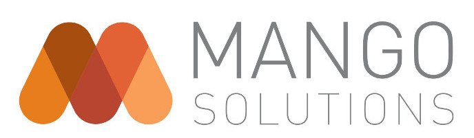
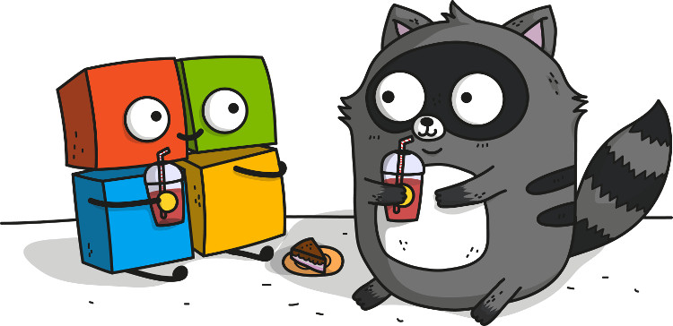
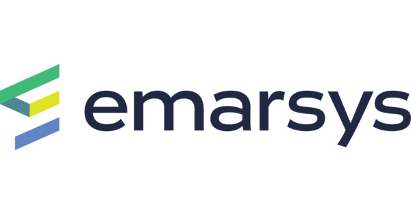
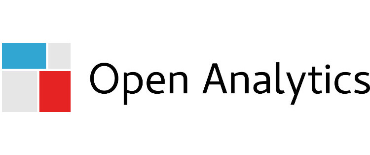
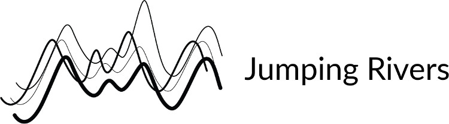

eRum 2018
May 14-16
Budapest, Hungary
Latest News
Stay informed! @erum2018
Not on Twitter or want to get notified in a more traditional way? No problem! Simply sign-up to the low volume eRum 2018 mailing list:
Overview
-
Monday
May 14, 2018
13 half-day Workshops
- Beginner and hard-core topics:
- Writing R Packages
- Advanced R Coding
- Machine Learning
- Data Visualization
- Spatial Data
Welcome Reception
- Poster session
- Shiny demos
- Networking
-
Tuesday
May 15, 2018
34 R talks on two tracks
- 3 keynotes, 8 invited, 13 contributed & 10 lighning talks
- Statistics
- Time-series
- Big Data
- Web Apps
Conference Dinner
- Boat trip on the Danube
- Hungarian dishes
- Networking
-
Wednesday
May 16, 2018
29 R talks on two tracks
- 2 keynotes, 5 invited, 18 contributed & 14 lighning talks
- Machine Learning
- Reproducible Research
- Teaching
- Business
- Use-cases
- Spatial data
Meetup
- Work in progress
About the Conference
The European R Users Meeting, eRum, is an international conference that aims at integrating users of the R language living in Europe. Although the useR! conference series also serve similar goals, but as it's alternating between Europe and USA (and more recently Australia in 2018), we decided to start another conference series in the years when the useR! is outside of Europe.
The first eRum conference was held in 2016 in Poznan, Poland with around 250 attendees and 20 sessions spanning over 3 days, including more than 80 speakers. Around that time, we also held another, although shorter conference in Budapest: the first satRday event happened with 25 speakers and almost 200 attendees from 19 countries. The eRum 2018 conference brings together the heritage of these two successful events: planning for 400-500 attendees from all around Europe at this 1+2 days international R conference.
The local Organizing Committee is lead by Gergely Daroczi, who chaired the Budapest satRday event as well. Just like the satRday series, eRum is also a nonprofit conference and driven by enthusiasm for open-source, R and the related community, so we make no financial gains and we do not get paid at all for working on this event. If you want to get in touch, please feel free to e-mail us.
The Program Committee (including members from the local R User Group, eRum 2016, R Forwards, R Ladies and other European R User Groups) guarantees to bring you a fantastic lineup of speakers and a quality program:
- Adolfo Alvarez, Poland
- Ágnes Salánki, Hungary
- Andrew Lowe, Hungary
- Bence Arató, Hungary
- Branko Kovač, Serbia
- Eszter Windhager-Pokol, Hungary
- Gergely Daróczi, Hungary
- Heather Turner, UK
- Kevin O'Brien, Ireland
- Imre Kocsis, Hungary
- László Gönczy, Hungary
- Maciej Beresewicz, Poland
- Mariachiara Fortuna, Italy
- Przemyslaw Biecek, Poland
- Szilárd Pafka, USA
Sponsors
As we try to make this nonprofit event as affordable as possible for the attendees, yet keeping all the venue, catering and program quality extremely high (eg look at our venues and expect exciting keynotes and invited talks), so thus we heavily rely on our generous sponsors contributing to the success of this event and make this happen. Although we already got a good number of great offers, but sponsorship opportunities are still available (starting from $1,000) -- if interested, please get in touch!
We thank all our generous sponsors for supporting this conference -- their financial help and great commitment to the R community is highly appreciated and was essential to bring this event to life! Please find below the list of our partners per sponsorship level, and we kindly ask you to visit their homepages to get some quick insights on what are they doing and how they use R:
Platinum
Gold
 Silver
 Bronze
Important Dates
Please find below the most important milestones of the conference based on the prelimenary schedule:
| Event | Date |
|---|---|
| Workshop Ideas Submission Deadline | |
| Abstract Submissions Deadline | |
| Notification of Acceptance | |
| Early-Bird Registration Deadline | |
| Final Program Announced | April 8, 2018 |
| Registration Deadline | April 29, 2018 |
| Workshops | May 14, 2018 |
| Conference | May 15-16, 2018 |
Registration
To minimize the financial barriers of attending this nonprofit conference and thanks to the generous contributions from our sponsors, we decided to keep the registration fees as low as possible and supposed to be affordable to even students and other interested parties paying for the registration on their own:
| Student | Academic | Industry | |
|---|---|---|---|
|
Between Jan 1 and Mar 15 |
(~50 EUR) |
(~100 EUR) |
(~200 EUR) |
|
Standard registration Between Mar 16 and Apr 29 |
25,000 HUF (~80 EUR) |
45,000 HUF (~150 EUR) |
85,000 HUF (~275 EUR) |
| Late and on-site registration | Not available. | ||
We also offer "Supporter" level tickets for around 30% extra over the "Industry" ticket prices to express your support for this event and the R community by making it possible for others without the requred financials to attend the event. We suggest this option for freelancers and smaller companies without a budget to become an official sponsor of the conference. Note, that the "Supporter" level tickets provide the exact same features as any other ticket, the only extra feature is a special-colored badge to highlight your generous contribution.
Not sure which conference ticket to buy?
- We decided to keep the student ticket fees as low as possible (not even covering our catering and related expenses -- so heavily relying on our sponsors' generous contributions) and affordable for students even without any salary. Pick this option if you are an actual full-time student without income letting you pick a more expensive ticket type
- R users working in academia (eg higher education or research institutes etc) should pick the Academic option, which is still very reasonably priced and planned to be affordable for most European researchers, professors and PhD candidates -- hopefully covered by your institute
- Everyone else with a full-time and paid job (or equivalent, eg freelancing) should pick the Industry option (which is still pretty affordable compared to past years' useR! and other conference ticket prices) -- hopefully sponsored or reimbursed by your employer
What payment options are possible?
Please note that by default, we only accept Paypal payments (eg debit or credit cards) to automate the administrative tasks related to ticketing and invoicing to reduce our costs at this nonprofit event and make it affordable for all attendees -- but on request, we can also provide a proforma invoice and accept postpaid wire transfer as well. Please note that this option requires us to charge ~10 EUR extra administration fee. If that's what you rather prefer (or have to do), then go ahead with the registration and pick the "Paper invoice or post-paid option" Invoice Type, fill in all your details, then use the "POSTPAID" Discount Code to check-out without paying via PayPal. Then we will send you the proforma invoice in a week and finalize your registration after the payment has cleared.
On the other hand, please note that wire-transfer payments are possible via PayPal as well, so if you would like to avoid paying the extra administration fee, you can also open a free PayPal account and do a wire-transfer there to top up your account, then register for the eRum conference using your PayPal balance -- so that's also possible without having access to a debit or credit card.
Buy Conference Ticket(s)Registering for the event and purchasing a ticket entitles you to attend 2 half-day or a full-day workshop on May 14, all conference talks on May 15-16 -- including coffee breaks and lunch on all 3 days with no hidden costs. 27% Hungarian VAT included and we provide electronic invoices on all purchases in a few weeks after payment cleared. You can pay by PayPal (including easy payment options with credit/debit card and wire transfer), but please get in touch if you need any special assistance with the payment, invoice etc.
Why would you wait any longer? Register for the event today -- the number of available spots are limited!
Call for Papers
Why should you consider giving a talk?
- there's a fantastic R community in Hungary and an expected 400-500 R users from all around Europe looking forward to attending your talk or poster,
- get quick feedback on your proposal -- send an e-mail to the Program Committee with your questions and we are happy to help you improve your abstract(s) and will also notify everyone before the end of March so that you can plan ahead,
- we might provide financial support to reimburse registration and/or travel & accomodation expenses,
- and most importantly: this is pretty unique opportunity to give a talk focusing on R to a larger crowd in Europe in 2018 -- especially in a club under a pool :)
Please feel free to submit one or more proposal(s) in English on the below URL with the following presentation formats:
- Workshop (3-6 hours): Tutorial for 10-50 (or more) persons on a beginner or advanced R topic
- Regular talk: Abstracts accepted for talks will take place during oral sessions. Each talk is allowed 20 minutes for the presentation including questions and answers.
- Lightning talk (5min): A variation of the pecha kucha and ignite formats that we love at the useR! confereces: 15 slides shown for 20-20 seconds.
- Poster: Abstracts accepted for posters will take place during an afternoon poster session, which is a social event. There are no parallel talks or events happening, so everyone can talk and stop by posters they are interested in. The dimensions of each poster should not exceed 4' x 4' or 120cm x 120cm.
Conference Program
The already confirmed keynote and invited speakers have been announced! We also received a very good number of high quality submissions on half-day and full-day workshop ideas, and the list of accepted tutorials is now published. The Call for Papers for regular talks and posters was closed on Feb 25, and the Program Committee is currently reviewing the applications. The final program is expected to be published around the end of March. Meanwhile, make sure to follow us to get notified about the most recent news as soon as possible!
Keynotes
We are extremely happy to announce that five fantastic keynote speakers confirmed their attendance to the conference:
at Universität Innsbruck (AT)

Being an R user since version 0.64.0, Achim is co-author of a variety of CRAN packages such as zoo, colorspace, party(kit), sandwich, or exams.
He is a Professor of Statistics at the Faculty of Economics and Statistics at Universität Innsbruck.
In the R community he is active as an ordinary member of the R Foundation, co-creator of the useR! conference series, and co-editor-in-chief of the open-access Journal of Statistical Software.
at ETH Zurich (CH)
Martin is a Mathematician (Ph.D. ETH Z) and Statistician, Lecturer and Senior Scientist at Seminar für Statistik, ETH Zurich, R Core member, Secretary General of the R Foundation.
Authored more than 20 R packages (such as Matrix, cluster, robustbase, cobs, VLMC, bitops or copula).
Emacs ESS Core Developer since 1997 and Project Leader since 2004, author of several books and over 50 scientific journal articles.
at INRA (FR)
Nathalie is a researcher at the French National Institute for Agronomical Research (INRA) in the Unit of Applied Mathematics and Computer Sciences in Toulouse.
She is the maintainer of the SOMbrero, SISIR and RNAseqNet R packages and author of a number of others.
She received her PhD in Mathematics from the University Toulouse 2 (Le Mirail), in 2005. She is a board member of the biostatistics platform in Toulouse and a former board member of the French Statistical Association (SFdS).
at University of Milan (IT)


Stefano is a full professor in Statistics, former R Core Team member (1999-2014) and maintainer of several R packages e.g: (sde, cem, rrp and opefimor)
Founder and president of Voices from the Blogs running sentiment analysis and text mining projects
Author of several scientific books, book chapters and journal articles.
at Norwegian School of Economics (NO)
Roger received his PhD in geography from the London School of Economics and post-doctoral degree from Adam Mickiewicz University.
His current research interests are in developing open source software for analysing spatial data. He has been active in the R community since 1997.
He is an auditor of the R Foundation, editor of the Journal of Statistical Software, Journal of Geographical Systems, Geographical Analysis and Norsk Geografisk Tidsskrift; and Editor-in-Chief of the R Journal.
Invited Speakers
We are very excited to share the news on our invited speakers who already confirmed their attendance as well:
at Univ. de Rennes (FR)

Professor at the faculty of Economics at Universite de Rennes, in France.
Editor of 'Computational Actuarial Science with R' (CRC Press, 2014) and of the blog https://freakonometrics.hypotheses.org/.
at RStudio (US)
Barbara is a software engineer at RStudio working primarily in the Shiny package.
She holds a double major in Statistics and Computer Science from Macalester College.
After four freezing Minnesota winters, she is back in her warm homeland of Portugal (but to the disappointment of many, she’s not a soccer fan).
at Newcastle University (UK)
Colin Gillespie is Senior lecturer (Associate professor) at Newcastle University, UK.
He has been running R courses (www.jumpingrivers.com) for over eight years at a variety of levels, ranging from beginners to advanced programming.
He is co-author of the recent book: Efficient R programming.
at H2O.ai (US)
Erin LeDell is the Chief Machine Learning Scientist at H2O.ai, an artificial intelligence company in Mountain View, California, USA, where she works on developing H2O, an open source library for scalable machine learning.
Before joining H2O.ai, she was the Principal Data Scientist at Wise.io and Marvin Mobile Security, and the founder of DataScientific, Inc.
Erin received her Ph.D. in Biostatistics from University of California, Berkeley and has a B.S. and M.A. in Mathematics.
at Univ. of California (US)
Henrik Bengtsson has a background in Computer Science (MSc) and Mathematical Statistics (PhD) and is an Associate Professor at the UCSF Department of Epidemiology and Biostatistics.
He has extensive experience in applied statistics, computational genomics, and large-scale processing. He has worked with R since 2000 and since contributed 30+ packages to CRAN and Bioconductor.

at rOpenSci (US)
Jeroen graduated in 2014 at the UCLA department of statistics and is now a post doctoral researcher at UC Berkeley with the rOpenSci group.
His official job description involves development of algorithms and software to enable processing, security and archiving of research data to facilitate data-driven open science. In practice he writes R packages that do cool and important stuff.
Some popular ones are opencpu, jsonlite, curl, V8, openssl, mongolite, commonmark, pdftools and hunspell.
Recently he developed an interest in cryptography and the decentralized web.
at Statistics Netherlands
Mark van der Loo works as a consultant and researcher at the department of statistical methods of Statistics Netherlands. He has (co)authored and published several R packages related to data cleaning, including 'validate', 'dcmodify', 'errorlocate', 'extremevalues', and 'stringdist'.
Mark is coauthor of the book 'Statistical Data Cleaning with Applications in R' published by Wiley, Inc (2018).
at ZHAW (CH)
Matthias Templ is lecturer at the Zurich University of Applied Sciences, Switzerland. His research interest includes imputation, statistical disclosure control, compositional data analysis and computational statistics.
He published two books and more than 45 papers. Additionally, he is the author of several R packages.
In addition, Matthias Templ is the editor-in-chief of the Austrian Journal of Statistics. With two of his colleagues he owns and founded the company data-analysis OG.
at Appsilon (PL)
Olga is a senior data scientist at Appsilon Data Science and a co-founder of datahero.tech. She leads a team of data scientists and build data science predictive/explanatory solutions and deploy them in production, usually wrapped in a Shiny App UI.
She develops Appsilon’s open-source R packages. Olga holds a MSc degree in Econometrics from the University of Rotterdam.
She co-organizes the largest meetup of R users in Poland and is a co-founder of R-Ladies Warsaw chapter.
at Warsaw University (PL)
Data Scientist with background in both mathematical statistics and software engineering.
Research activities are mainly focused on high-throughput genetic profiling in oncology.
Also interested in evidence based education, evidence based medicine, general machine learning modeling and statistical software engineering.
An R enthusiast: three books, dozen packages, lots of talks, classes and workshops.
at Epoch (US)
Szilard has a PhD in Physics for using statistical methods to analyze the risk of financial portfolios.
For the last decade he's been the Chief Scientist of a tech company in California doing everything data (analysis, modeling, data visualization, machine learning etc).
He is the founder of the LA R meetup, the author of a machine learning benchmark on github (1000+ stars), a frequent speaker at conferences, and he has taught graduate machine learning courses at two universities (UCLA, CEU).
Workshop Tutors
at Mango Solutions (UK)
Aimee, Douglas and Mark work in the data science team at Mango Solutions.
Aimee is the lead trainer at Mango and has taught courses across all aspects of data science with a particular focus on R.
at Univ. of Copenhagen (DK)
Anne Helby Petersen holds a MS in statistics and is the primary author of the dataMaid R package.
She is experienced in communicating statistical topics to a wide audience as a teaching assistant at the University of Copenhagen.
at VT-ARC (US)

at Univ. of Copenhagen (DK)
Claus Thorn Ekstrøm is the creator/contributor to several R packages (dataMaid, MESS, MethComp, SuperRanker) and is the author of "The R Primer" book.
He has previously given tutorials on Dynamic and interactive graphics and the role of interactive graphics in teaching.
at ThinkR (FR)
Colin Fay is Data Analyst, R trainer and Social Media Expert at ThinkR, a French agency focused on everything R-related.
Colin is a prolific open source developer, author of more than 12 R packages actively maintained on GitHub (6 of them being on CRAN): attempt, proustr, tidystringdist...
He also contributes to several other packages.
He is a member of the RWeekly team, a collaborative news bulletin about R, and the cofounder of the Breizh Data Club, an association of French data professionals.
at Newcastle University (UK)
Colin Gillespie is Senior lecturer (Associate professor) at Newcastle University, UK.
He has been running R courses (www.jumpingrivers.com) for over eight years at a variety of levels, ranging from beginners to advanced programming.
He is co-author of the recent book: Efficient R programming.
at Mango Solutions (UK)
Aimee, Douglas and Mark work in the data science team at Mango Solutions.
Douglas is a principal consultant and specialises in machine learning/deep learning, working with customers to embed these techniques in their analytic workflows.

at Oxera (UK)
Grace Meyer is a commercial analytics expert with proven success in advising business strategy based on data driven insights.
At Oxera, she applies machine learning to strategic projects and leads the data science and programming team.
Grace & Kasia are both mentors in R-Ladies London.
at Freelance (UK)
Over ten years experience providing statistical and programming support to investigators in statistics, social science, drug discovery, bioinformatics and agriculture.
Specialties: statistical programming, R programming, non-clinical statistics, biostatistics, statistical modelling
Heather and Isabella are core team members of the R Foundation Forwards taskforce for women and under-represented groups.
at Emarsys (HU)
at Univ. College Dublin (IE)
Dr Isabella Gollini is an Assistant Professor in Statistics at University College Dublin, Ireland.
She is the author and contributor of three R packages: tailloss, GWmodel, lvm4net.
Isabella and Heather are core team members of the R Foundation Forwards taskforce for women and under-represented groups.
at Univ. of Cincinnati (US)
Jakub Nowosad is a postdoc in the Space Informatics Lab at University of Cincinnati.
He is co-author of the spData package and the author of the rcartocolor, pollen and rgeopat2 packages.
Friedrich Schiller Univ. (DE)
The speaker:
- has a special interest in and passion for predictive mapping of landslide susceptibility and biodiversity (using statistical and machine learning models).
- worked as a geo-data scientist for a location analyst consulting company.
- is the creator and maintainer of the R package RQGIS and a co-author of the forthcoming book "Geocomputation with R".
at Emarsys (HU)
János Divényi is a PhD candidate in economics at the Central European University (CEU) who works as lead data scientist at Emarsys in Budapest.
He writes code in R (and Python), likes to think carefully about causality, and seeks intuitive understanding of complicated stuff.
He is an occasional speaker of the local R meetup, and has more than 5 years' experience of teaching from various institutions (CEU, BME, MCC).

at Emarsys (HU)
Jenő Pál is an economist holding a PhD from the Central European University (CEU).
He works as a data scientist at Emarsys in Budapest and also occasionally teaches at CEU.
He has done empirical research on online news and earlier on numerical dynamic programming.
He is an enthusiastic R user and he also likes working with Python.
at H2O.ai (UK)
Jo-fai (or Joe) is a data scientist at H2O.ai. Before joining H2O, he was in the business intelligence team at Virgin Media in UK where he developed data products to enable quick and smart business decisions.
He also worked remotely for Domino Data Lab in the US as a data science evangelist promoting products via blogging and giving talks at meetups.
at Aviva (UK)
Dr. Kasia Kulma is a Data Scientist at Aviva with experience in building recommender systems, customer segmentations, predictive models and is now leading an NLP project.
She is the author of the blog R-tastic.
Kasia & Grace are both mentors in R-Ladies London.
at Mango Solutions (UK)
Aimee, Douglas and Mark work in the data science team at Mango Solutions.
Mark is head of data engineering and works with Mango customers to set up their infrastructure ready for advanced analytics techniques.
He is the author of the 'Field Guide to the R Ecosystem'.
at Statistics Netherlands
Martijn Tennekes has a PhD in game theory, and has been working at Statistics Netherlands for eight years on data visualization, big data, and R.
He authored three data visualization packages (treemap, tabplot, and tmap).
at University of Wrocław (PL)
Interests and experience in theoretical and applied Mathematics and Statistics. Huge enthusiast of mathematical modelling - both probabilistic and statistical.
Fan of R programming interested in creating tools for data analysis.
Currently associated with MI^2 Warsaw group and working on machine learning interpretability.
at Warsaw University (PL)
Data Scientist with background in both mathematical statistics and software engineering.
Research activities are mainly focused on high-throughput genetic profiling in oncology.
Also interested in evidence based education, evidence based medicine, general machine learning modeling and statistical software engineering.
An R enthusiast: three books, dozen packages, lots of talks, classes and workshops.
at University of Leeds (UK)
I’m a geographer and environmental scientist specialising in spatial data analysis and computing, especially R programming.
Based at the Leeds Institute for Transport Studies (ITS) I have a strong interest in transport modelling. This is described in a review of a book on the subject by Boyce and Williams (2015).
Talk Types
The pesentations of the conference will be delivered in the following formats:
- Workshop (3-6 hours): A hands-on tutorial for 20-100 persons on a beginner or advanced R topic for 180 mins with a 30 mins coffee break between the two 90 mins long sessions in a classroom environment, where attendees work on a laptop. No video or live-stream or video recordings are planned.
- Keynote talk: 45 mins invited, plenary (no parallel sessions) talk followed by 5 mins of Q&A in the main auditorium, potentially live-streamed on the Internet and to the other rooms at the conference venue.
- Invited talk: 18 mins invited talk followed by 2 mins of Q&A in one of the two main auditoriums, potentially live-streamed on the Internet.
- Regular talk: 18 mins contributed talk followed by 2 mins of Q&A in an auditorium, potentially live-streamed on the Internet.
- Lightning talk (5min): variation of the pecha kucha and ignite formats with fixed number of 15 slides in an auditorium, followed by 1 quick question if time allows. The slides are auto-forwarding every 20 seconds.
- Poster: presenters bring their printed posters not exceeding 4' x 4' or 120cm x 120cm to be mounted on the wall or provided poster holder (with tools provided by the organizers) for 4 hours on the Monday night social event. Attendees can freely walk around in the dedicated Poster Session area to check the posters and chat with the presenters. The presenters are suggested to stand by or not too far from their posters to answer any question others might have and to grab all opportunities to speak about their presentation :) If you want to print your posters in Hungary, you can get it printed eg in CopyGuru.hu for around 25 EUR.
- Demo: 5 mins of freeform presentation in an auditorium on Monday night without any dedicated time for Q&A, but with a follow-up session in a dedicated area (with tables) of the Poster Session where the presenters can continue demoing their application to the interested attendees and answer questions etc.
Schedule
Workshop day (May 14, 2018 -- Monday)
Conference day 1 (May 15, 2018 -- Tuesday)
| Foo room | Bar hall | |
|---|---|---|
| 8:00 |
Registration
|
|
| 8:10 | ||
| 8:20 | ||
| 8:30 | ||
| 8:40 | ||
| 8:50 |
Conference opening
|
|
| 9:00 |
Martin Mächler
|
|
| 9:10 | ||
| 9:20 | ||
| 9:30 | ||
| 9:40 | ||
| 9:50 |
Jeroen Ooms
|
Edwin Thoen: A recipe for recipes
|
| 10:00 | ||
| 10:10 |
Lionel Henry: Harness the R condition system
|
Ildiko Czeller: The essentials to work with object-oriented systems in R
|
| 10:20 | ||
| 10:30 | Coffee break |
|
| 10:40 | ||
| 10:50 | ||
| 11:00 |
Stefano M. Iacus: Sentiment Analysis on Social Media and Big Data
|
|
| 11:10 | ||
| 11:20 | ||
| 11:30 | ||
| 11:40 | ||
| 11:50 |
Olga Mierzwa: Taking inspirations from proven frontend frameworks to add to Shiny with 4 new packages
|
Marcin Kosiński: Multi-state churn analysis with a subscription product
|
| 12:00 | ||
| 12:10 |
Mikołaj Olszewski: Not all that Shiny by default
|
|
| 12:20 | ||
| 12:30 | Lunch break |
|
| 12:40 | ||
| 12:50 | ||
| 13:00 | ||
| 13:10 | ||
| 13:20 | ||
| 13:30 |
Nathalie Villa-Vialaneix: Learning from (dis)similarity data
|
|
| 13:40 | ||
| 13:50 | ||
| 14:00 | ||
| 14:10 | ||
| 14:20 |
Erin LeDell: Scalable Automatic Machine Learning in R
|
Sander Devriendt: Sparsity with multi-type Lasso regularized GLMs
|
| 14:30 | ||
| 14:40 |
Szilard Pafka: Better than Deep Learning - Gradient Boosting Machines (GBM) in R
|
Francois Mercier: Nonlinear mixed-effects models in R
|
| 14:50 | ||
| 15:00 |
Andrie de Vries: Tools for using TensorFlow with R
|
Stanislaus Stadlmann: bamlss.vis - an R package for interactively visualising distributional regression models
|
| 15:10 | ||
| 15:20 | Coffee break |
|
| 15:30 | ||
| 15:40 | ||
| 15:50 |
Matthias Templ: Compositional analysis of our favourite drinks
|
Tom Reynkens: Estimating the maximum possible earthquake magnitude using extreme value methodology: the Groningen case
|
| 16:00 | ||
| 16:10 |
Przemyslaw Biecek: Show me your model 2.0
|
Andrew Collier: Taking the Bayesian Leap
|
| 16:20 | ||
| 16:30 |
Heather Turner: Modelling Item Worth Based on Rankings
|
|
| 16:40 | ||
| 16:50 |
Federico Marini: Interactivity meets Reproducibility: the ideal way of doing RNA-seq analysis
|
|
| 17:00 | ||
| ... |
Walk from Akvarium Klub to Zsófia River Cruises
|
|
| 19:00 |
Conference dinner
|
|
| 20:00 | ||
| 21:00 | ||
Conference day 2 (May 16, 2018 -- Wednesday)
| Foo room | Bar hall | |
|---|---|---|
| 8:30 |
Registration
|
|
| 8:40 | ||
| 8:50 | ||
| 9:00 |
Roger Bivand: A practical history of R (where things came from)
|
|
| 9:10 | ||
| 9:20 | ||
| 9:30 | ||
| 9:40 | ||
| 9:50 |
Henrik Bengtsson: A Future for R: Parallel and Distributed Processing in R for Everyone
|
Noa Tamir: Data Culture in Practice
|
| 10:00 | ||
| 10:10 |
Dénes Tóth: radii.defer - Deferred execution of nested functions
|
Aimee Gott: Using R to Build a Data Science Team
|
| 10:20 | ||
| 10:30 |
Coffee break
|
|
| 10:40 | ||
| 10:50 | ||
| 11:00 |
Barbara Borges
|
Leopoldo Catania: Predicting Cryptocurrencies Time–Series with the eDMA package
|
| 11:10 | ||
| 11:20 |
Colin Gillespie: Getting the most out of GitHub and friends
|
David Ardia: Markov-Switching GARCH Models in R: The MSGARCH Package
|
| 11:30 | ||
| 11:40 |
David Smith: Speeding up R with Parallel Programming in the Cloud
|
Andreas Scharmüller: Time series modeling of plant protection products in aquatic systems in R
|
| 11:50 | ||
| 12:00 |
Simon Field: Exploiting Spark for high-performance scalable data engineering and data-science on Microsoft Azure
|
Claus Thorn Ekstrøm: Predicting the winner of the 2018 FIFA World Cup predictions
|
| 12:10 | ||
| 12:20 |
Goran Milovanović: Wikidata Concepts Monitor: R in action across Big Wikidata
|
|
| 12:30 | ||
| 12:40 |
Lunch break
|
|
| 12:50 | ||
| 13:00 | ||
| 13:10 | ||
| 13:20 | ||
| 13:30 | ||
| 13:40 |
Achim Zeileis: R/exams -- A One-for-All Exams Generator
|
|
| 13:50 | ||
| 14:00 | ||
| 14:10 | ||
| 14:20 | ||
| 14:30 |
Mark van der Loo: Tracking changes in data with the lumberjack package
|
|
| 14:40 | ||
| 14:50 |
Edwin de Jonge: validatetools - resolve and simplify contradictive or redundant data validation rules
|
|
| 15:00 | ||
| 15:10 |
Coffee break
|
|
| 15:20 | ||
| 15:30 | ||
| 15:40 |
Arthur Charpentier: Demographics with Genealogical Data
|
Andrea Melloncelli: What software engineers can teach to data scientists: code safety and … with automatic tests
|
| 15:50 | ||
| 16:00 |
Robin Lovelace: Geocomputation for Active transport planning: a case study of cycle network design
|
Wit Jakuczun: Know your R usage workflow to handle reproducibility challenges
|
| 16:10 | ||
| 16:20 |
Mira Kattwinkel: openSTARS - prepare GIS data for regression analysis on stream networks
|
Omayma Said: Fitting Humans Stories in List Columns: Cases From an Online Recruitment Platform
|
| 16:30 | ||
| 16:40 |
Tomislav Hengl: Machine Learning (ranger package) as a framework for spatial and spatiotemporal prediction
|
|
| 16:50 | ||
| 17:00 |
Closing remarks
|
|
Workshops
There is no separate extra fee for attending workshops and the general conference ticket already includes attendance to the workshops and related catering etc. On the other hand, we kindly ask you to register for the workshop day when purchasing your conference ticket, so that we can plan the required capacity.
Please note that the workshops will take place at the Central European University's N15 building -- see more information on the venues below.
The list of planned 2x1.5 hours long workshops/tutorials:
Packages & Performance
| Title | Presenter(s) |
|---|---|
| Building a package that lasts | Colin Fay |
|
OverviewYou’ve got the killer idea for an R package, but you’re not sure where to start? Then you’ve come to the right place!During this workshop, we’ll go through the whole process of building a package that lasts. In other words, we’ll review the best practices to create a package that works (obviously), but more importantly a package that is extensively tested to prevent bugs, that will be easier to maintain on the long run, and that will be fully documented. At the end of this workshop, the attendees will have a road map for writing robust packages, designed for industrial use and/or for CRAN. Plan of the workshop
Required packages
Required skills of participants
Required work to do before workshop
|
|
| Clean R code - how to write it and what will the benefits be |
Ildiko Czeller Jenő Pál |
|
Clean R code - how to write it and what will the benefits beGoalsBy the end of the tutorial participants should be able to:
Detailed OutlineDuring the tutorial the participants will perform a guided data analysis task and make several refactoring steps as we progress. They will immediately experience the benefit of applying the shown techniques. The tutorial will cover launguage-agnostic and R-specific topics as well.Some of the language-agnostic topics covered:
Pre-requisitesParticipants should be able to create simple R functions and use R for data analysis. We believe the tutorial is useful for beginners as well as for more experienced R programmers.JustificationMost R users do not have a formal background in software engineering, however, coding is a significant part of their job. We believe every R user can benefit from writing cleaner and simpler code which also makes it more reusable and less error-prone. Writing clean code also helps with reproducibility. Refactoring early and often makes the life of your future self and your collaborators as well as others wishing to understand your code easier. |
|
| Efficient R programming | Colin Gillespie |
|
Detailed OutlineThis tutorial will cover a variety of techniques that will increase the productivity of anyone using R. Topics include optimizing your set-up, tips for increasing code performance and ways to avoid memory issues. Ranging from guidance on the use of RStudio to ensure an efficient workflow to leveraging C++, this tutorial provides practical advice suitable for people from a wide range backgrounds.An overview of the topics covered are:
Pre-requisitesParticipants should be familiar with for loops, if statements and writing simple functions.JustificationR is now used in many disparate settings. However, the majority of R programmers have no formal computer training, and instead have "learned on the job". This tutorial aims to fill in some of these gaps. |
|
| Forwards Package Development Workshop for Women |
Isabella Gollini Heather Turner |
|
OverviewAn analysis of CRAN maintainers in 2016 estimated that 11.4% were women (http://forwards.github.io/data/). This proportion is much lower than the proportion of women that attended the R conference useR! in the same year (28%). In addition a survey of the participants at that useR! conference found that women were less likely than men to have experience of contributing to or writing packages (http://forwards.github.io/blog/2017/03/11/users-relationship-with-r/. Also women were less likely to use R recreationally, so perhaps have less opportunity to develop package development skills.This workshop is designed to address this skills gap. It is for women who have done some R coding and are ready to take the next step in providing it to others to use. During the tutorial participants will learn how to
R packages: knitr, devtools, pkgdown, rmarkdown, roxygen2, testthat IDE: RStudio Thanks to funding from the R Consortium, we are able to offer a limited number of scholarships to attend the Package Development Workshop. Please apply by filling in the application form before Feb 25, 2018. |
|
| The beauty of data manipulation with data.table | János Divényi |
|
GoalsThe data.table package is a powerful tool for manipulating data, especially if the underlying data set gets large (~ above 1 GB). In spite of its clear advantages the package is underused. Many R users are afraid of it because of its "ugly" syntax. This workshop aims to dismantle this belief by showing the beauty in the package logic, and illustrating its strengths in performance.By the end of the tutorial participants should be able to:
MethodThe workshop would start with a short introduction into the logic and syntax of the data.table package. The participants would discover the power and beauty of the package through guided data manipulation tasks borrowed mainly from Emarsys use cases.Pre-requisitesParticipants should be able to solve data manipulation tasks in R (using base R or the hadleyverse/tidyverse). No knowledge of the data.table package is required. |
|
Machine Learning
| Title | Presenter(s) |
|---|---|
| Automatic and Interpretable Machine Learning in R with H2O and LIME | Jo-fai Chow |
|
OverviewGeneral Data Protection Regulation (GDPR) is just around the corner. The regulation will become enforceable a week after the eRum conference (from 25 May 2018). Are you and your organization ready to explain your models?This is a hands-on tutorial for R beginners. I will demonstrate the use of two R packages, h2o & LIME, for automatic and interpretable machine learning. Participants will be able to follow and build regression and classification models quickly with H2O's AutoML. They will then be able to explain the model outcomes with a framework called Local Interpretable Model-Agnostic Explanations (LIME). References:
|
|
| Building an Interpretable NLP model to classify tweets |
Grace Meyer Kasia Kulma |
|
OverviewUnstructured text data is rapidly increasing in volume and variety and with advances in Machine Learning it’s becoming available to be tapped for insights and patterns. One of the use-cases of predictive modelling in text analytics would be to classify an author based on text alone. However, even the most accurate model may be difficult to interpret and therefore understand how reliable it is or whether it produces insights that can be generalized. One of the solutions here is to apply the Local Interpretable Model-agnostic Explanations (LIME) framework to the classifiers to generate interpretable explanations.In this workshop, we will take you step-by-step through tidytext principles and text-analytics pipeline to create a predictive model classifying tweets by Clinton or Trump. We will go over the data collection, exploration, feature engineering and model building. Finally, we will apply the LIME framework to better understand and interpret what drives model predictions. R packages: readr, dplyr, tm, tidytext, text2vec, caret, xgboost, lime Data used: Clinton-Trump-tweets |
|
| DALEX: Descriptive mAchine Learning EXplanations . Tools for exploration, validation and explanation of complex machine learning models |
Przemyslaw Biecek Mateusz Staniak |
|
OverviewComplex machine learning models are frequently used in predictive modelling. There are a lot of examples for random forest like or boosting like models in medicine, finance, agriculture etc.In this workshop we will show why and how one would analyse the structure of the black-box model. This will be a hands-on workshop with four parts. In each part there will be a short lecture (around 20 minutes) and then time for practice and discussion (around 20 min). IntroductionHere we will show what problems may arise from blind application of black-box models. Also we will show situations in which the understanding of a model structure leads to model improvements, model stability and larger trust in the model.During the hands-on part we will fit few complex models (like xgboost, randomForest) with the mlr package and discuss basic diagnostic tools for these models. Conditional ExplainersIn this part we will introduce techniques for understanding of marginal/conditional response of a model given a one- two- variables. We will cover PDP (Partial Dependence Plots) and ICE (Individual Conditional Expectations) packages for continuous variables and MPP (Merging Path Plot from factorMerger package) for categorical variables.Local ExplainersIn this part we will introduce techniques that explain key factors that drive single model predictions. This covers Break Down plots for linear models (lm / glm) and tree-based models (randomForestExplainer, xgboostExplainer) along with model agnostic approaches implemented in the live package (an extension of the LIME method).Global ExplainersIn this part we will introduce tools for global analysis of the black-box model, like variable importance plots, interaction importance plots and tools for model diagnostic.Packages
|
|
| Deep Learning with Keras for R |
Aimee Gott Douglas Ashton Mark Sellors |
|
OverviewIf you don’t work at one of the big tech giants, then deep learning may seem out of reach. Fortunately, in recent years the barrier to entry has dropped dramatically. Libraries, such as TensorFlow, have made it much easier to implement the low level linear algebra. While Keras builds on this to provide a high level Python API specifically for building neural networks. A single data scientist can now quickly build a deep network, layer by layer, without losing time on implementation details. You don’t need terabytes of data and GPU clusters to get started; even relatively small problems can now benefit from deep learning.A key aim of Keras is to reduce the time from idea to implementation. Many data scientists choose to use the R language for its first class statistics functionality, powerful data manipulation, and vibrant community. While Python is also a fantastic choice for data science, learning it is a significant investment when what you really want to be doing is trying out your idea. For this reason RStudio created the R Interface to Keras. This allows an R user to quickly experiment with neural networks to see if they are right for their problem. In this workshop we will get you up and running with Keras for R. We will cover some theoretical background but the focus is on implementation. We will demonstrate how to setup different types of neural network to solve simple problems with time series, and give you the opportunity to build your own with guided exercises. A cloud based RStudio Server environment will be provided so attendees only require a laptop with internet access and a modern browser. Basic R knowledge is required, and it will help if attendees are familiar with packages such as dplyr for data manipulation. |
|
Spatial Data
| Title | Presenter(s) |
|---|---|
| Geocomputation with R |
Jannes Muenchow Jakub Nowosad Robin Lovelace |
|
Geocomputation with RGeographic data is special and has become ubiquitous. Hence, we need computational power, software and related tools to handle and extract the most interesting patterns of this ever-increasing amount of (geo-)data.This workshop gives an introduction how to do so using R. It will introduce the audience how the two most important spatial data models - vector and raster - are implemented in R. The workshop will also give an introduction to spatial data visualization. Maps are a compelling way to display complex data in a beautiful way while allowing first inferences about spatial relationships and patterns. Additionally, we will bridge R with Geographic Information Systems (GIS), i.e., we show how to combine the best of two worlds: the geoprocessing power of a GIS and the (geo-)statistical data science power of R. We will do so with a use case presenting spatial and predictive modeling. Learning objectivesBy the end of this workshop, the participants should:
Tutorial content
|
|
| Plotting spatial data in R | Martijn Tennekes |
|
OverviewIn this workshop you will learn how to plot spatial data in R by using the tmap package. This package is an implementation of the grammar of graphics for thematic maps, and resembles the syntax of ggplot2. This package is useful for both exploration and publication of spatial data, and offers both static and interactive plotting.For those of you who are unfamiliar with spatial data in R, we will briefly introduce the fundamental packages for spatial data, which are sf, sp, and raster. With demonstrations and exercises, you will learn how to process spatial objects from various types (polygons, points, lines, rasters, and simple features), and how to plot them. Feel free to bring your own spatial data. Besides plotting spatial data, we will also discuss the possibilities of publication. Maps created with tmap can be exported as static images, html files, but they can also be embedded in rmarkdown documents and shiny apps. R packages: tmap, sf, sp, raster, rmarkdown, shiny Tennekes, M. (2018) tmap: Thematic Maps in R. Forthcoming in the Journal of Statistical Software (JSS). |
|
Data Structures
| Title | Presenter(s) |
|---|---|
| Building a pipeline for reproducible data screening and quality control |
Claus Ekstrøm Anne Helby Petersen |
|
OverviewOne of the biggest challenges for a data analyst is to ensure the reliability of the data since the validity of the conclusions from the analysis hinges on the quality of the input data. This tutorial will cover the workflow of data screening and -validation that transforms raw data into data that can be used for statistical analysis.In particular, we will discuss organizing research projects, tidy data formats, internal and external validity of data, requirements for reproducible research, the dataMaid R package for customized data screening, the assertr and assertive R packages for data validation and data validation rule sets, and how to produce code books that summarize the final result of the data screening process and provide a starting point for the subsequent statistical analyses. |
|
| Graphs: A datastructure to query | Benjamin Ortiz Ulloa |
|
OverviewWhen people think of graphs, they often think about mapping out social media connections. While graphs are indeed useful for mapping out social networks, they offer so much more. Graphs provide a datastructure that scales very well and can be queried in intuitive ways. Data structures in the real world resemble vertices and edges more than they resemble rows and columns. Gremlin and Cypher are query languages that take advanatage of the natural structure of graph databases. In this tutorial I will show how we can use igraph in a similar manner as these graph query languages to get new insites into our data.The workshop will be divided in 4 parts:
References: |
|
Please note that no computers will be provided at the workshops, so we recommend bringing your own computer.
Abstracts
The detailed abstracts of the talks listed in the above schedule ordered by the talk type and the speakers' first name:
Keynotes
| Title | Speaker(s) | |
|---|---|---|
| R/exams: A One-for-All Exams Generator | Achim Zeileis | |
|
A common challenge in large-scale courses is that many variations of similar exercises are needed for written exams, online tests conducted in learning management systems (such as Moodle, Blackboard, etc.), or live quizzes with voting via smartphones or tablets. The open-source package exams for R (http://www.R-exams.org/) provides a one-for-all approach to automatic exams generation, tying together various open-source packages (in R and beyond). It is based on individual exercises for multiple-choice or single-choice questions, numeric or text answers, or combinations of these. The format can be either in R/LaTeX or R/Markdown containing questions/solutions with some random numbers, text snippets, plots/diagrams, or even individualized datasets. The exercises can be combined to exams and easily rendered into a number of output formats including PDFs for classical written exams (with automatic evaluation), import formats for various learning management systems, live voting (via ARSnova), and the possibility to create custom output (in PDF, HTML, Docx, ...). It is illustrated how the Department of Statistics at Universität Innsbruck manages its large introductory mathematics course using PDF exams that can be automatically scanned and evaluated, online tests in the OpenOLAT learning management system, and live quizzes in the ARSnova audience response system. Furthermore, it is demonstrated how psychometric item response theory (IRT) can be utilized to gain further insights into the difficulty of the questions, ability of the students, and the "fairness" of the exam across participants. |
||
| Martin Mächler | ||
NA_character_
|
||
| Learning from (dis)similarity data | Nathalie Villa-Vialaneix | |
|
In some applications and in order to better address real-world situations, data can be known through pairwise measures of resemblance or difference between the objects of interest (similarities, dissimilarities, kernels, networks...). This talk will describe a general framework to deal with such data, especially focusing on the unsupervised setting and exploratory analyses. Also, solutions for combining multiple relational data - each providing a different view on a specific aspect of the data - will be described. The talk will provide an overview of applications of this framework to self-organizing maps (R package SOMbrero), constrained hierarchical clustering (R package adjclust) and PCA (R package mixKernel), with illustrations on case studies in the fields of biology and social sciences. |
||
| A practical history of R (where things came from) | Roger Bivand | |
|
Not infrequently, we wonder why choices such as stringsAsFactors=TRUE or drop=TRUE were made. Understanding the original uses of S and R (in the 1900s), and seeing how these uses affected the development of R lets us appreciate the robustness of R's ecosystem. This three-hour workshop uses text analysis of the R sources and other information to explore R's history. Topics:
|
||
| Sentiment Analysis on Social Media and Big Data | Stefano M. Iacus | |
|
Extracting semantic content from texts has a long history in statistics but it has become quite a popular theme very recently with the advent of social media, especially those like Twitter, which mainly dispatch text messages. Applications range from marketing to election forecasting, well being or happiness analysis, market mood, etc. Despite a huge development of automatic methods, NLP or ontology based algorithms, social media data are not as easy to analyze as one might think compared to the analysis of romance or other forms of digital texts. The reason being the creativity and continuous change of online language. Supervised methods seem to be the only option. We will present some recent theoretical developments and a series of real life applications of these techniques to Twitter and other big data. |
||
Invited talks
| Title | Speaker(s) | |
|---|---|---|
| Demographics with Genealogical Data | Arthur Charpentier | |
|
In our study, we try to understand French migration (within France) in the XIXth century. Through a partnership with a genealogical site, we have obtained almost a billion 'records'. In the first part of the talk, we will discuss those data, and how to study them, with R. The most difficult tasks is that most tree are ascendant (from children to grand parents), but when studying migration, we must have a descendant approach (from grand parents to children). Furthermore, since we use collaborative data, there are a lot of doublons, and most of them are difficult to track (typos). In the second part, we will discuss semiological aspects : how to visualize complex information, with R. R packages: ggplot2 References:
| ||
| Bárbara Borges | ||
NA_character_
|
||
| Getting the most out of GitHub and friends | Colin Gillespie | |
|
Over the last few years, the popularity of git and GitHub has been on the increase. In this talk, we'll discuss a number of Github's friends and how to incorporate them into your workflow. During the course of the talk, we'll cover (amongst other things) how we can perform automatic checks on commits via travis and codecov, hosting books via the bookdown package, allowing twitter to notify your followers whenever you push and maintaining your own R package repostory. |
||
| Scalable Automatic Machine Learning in R | Erin LeDell | |
|
In this presentation, we provide an overview of the field of "Automatic Machine Learning" (AutoML) and introduce the AutoML functionality in the scalable and distributed machine learning library, H2O. We will present our unique methodology for automating the machine learning workflow, which includes feature pre-processing and automatic training/tuning of many models, with the goal of maximizing model performance. H2O AutoML provides an easy-to-use interface which automates the process of training a large selection of candidate models without any user configuration or knowledge about specific machine learning algorithms. The interface is designed to have as few parameters as possible so that all the user needs to do is point to their dataset, identify the response column and optionally specify a time-constraint. The user can also specify which model performance metric that they'd like to optimize and use a metric-based stopping criterion for the AutoML process rather than a specific time constraint. By default, several Stacked Ensembles will be automatically trained on the collection individual models to produce a highly predictive ensemble model which, in most cases, will top the AutoML Leaderboard. H2O AutoML is available in all H2O interfaces including the h2o R package, Python module and the Flow web GUI. We will also provide simple R code examples to get you started using H2O AutoML. |
||
| A Future for R: Parallel and Distributed Processing in R for Everyone | Henrik Bengtsson | |
|
In programming, a future is an abstraction for a value that may be available at some point in the future. The non-blocking nature of futures makes them ideal for asynchronous evaluation of expressions in R, e.g. in parallel on the local machine, on a set of remote machines, or in the cloud. I am presenting the simple, unified, cross-platform future ecosystem for parallel and distributed processing in R. The most fundamental construct is R packages: future, future.apply, doFuture, future.batchtools |
||
| Jeroen Ooms | ||
NA_character_
|
||
| Tracking changes in data with the lumberjack package | Mark van der Loo | |
|
A data analyses may contain many steps where data is modified or corrected. For reasons of quality control and efficiency it is imperative to be able to understand the effect of each step on the final result. One way to do this is to somehow measure (log) the effect that each data processing step has on the data. The lumberjack package offers an elegant solution by endowing the function composition (pipe) operator with the capability of logging changes in data flowing through it. This means that the effect of any data processing function that adheres to the 'tidy' data-in-data-out style can be monitored almost effortlessly. The package offers several basic loggers as well as a framework for users and package authors to refine logging by defining their own loggers. In this talk I will go into the design principles behind the package, demonstrate the workflow, and show several examples of loggers that usefully summarize changes in data. |
||
| Compositional analysis of our favourite drinks | Matthias Templ | |
|
Compositional data are nowadays widely accepted as multivariate observations carrying relative information. Compositional data follow the principle of scale invariance, typically being represented in proportions and percentages. In other words, for compositional data the relevant information is contained in the (log-)ratios between the components (parts). Compositional data are present in almost any field of research. Examples for compositional data are, for example, concentration of chemical elements in soil samples, time budget data, expenditures, tax or wage components or percentages and ratios reported in various tables. Through data from our favourite drinks, we will show the usefulness of the representation of data in isometric coordinates and the analysis of these coordinates instead of analysing the raw data on the simplex. As a side note of the talk, we want to answer such important questions of life: will the quality of beer mainly depend on age and how it should be stored? Should you drink blended coffee, or is Scottish Whisky really different to Irish or American Whiskey? We use the package *robCompositions* for all practical examples. R packages: robCompositions |
||
| Taking inspirations from proven frontend frameworks to add to Shiny with 4 new packages | Olga Mierzwa | |
|
There is no need to praise Shiny for its influence on results presentation. It’s no longer only a tool internally used by data science teams. Currently it’s becoming an alternative for business and is replacing both the BI solutions and custom made web applications. In order to face the competition, it needs constant development and new features. As with many other technology stacks, Shiny could benefit from community contributions for further development of the packages themselves and growth of independent libraries. In this presentation we will talk about four novel packages that add interesting capabilities to Shiny such as beautiful UI During the development process of the packages we took inspiration from proven frontend frameworks such as Meteor or Django. We will demo these packages and show how their development adds to the open source community, thereby helping companies adopt R/Shiny. |
||
| Show me your model 2.0 | Przemyslaw Biecek | |
|
According to many Kaggle competitions, winning solutions are often obtained with elastic tools like random forest, xgboost or neural networks. These algorithms have many strengths but also share a major weakness, which is the lack of interpretability of a model structure. Still we may extract some knowledge about the model structure. During this talk I will overview core techniques for exploration of machine learning models, like: Partial Dependency Plots, Individual Conditional Expectations, Merging Path Plots, Local Interpretable Visual Explanations and Break Down plots. |
||
| Better than Deep Learning - Gradient Boosting Machines (GBM) in R | Szilard Pafka | |
|
With all the hype about deep learning and "AI", it is not well publicized that for structured/tabular data widely encountered in business applications it is actually another machine learning algorithm, the gradient boosting machine (GBM) that most often achieves the highest accuracy in supervised learning tasks. In this talk we'll review some of the main GBM implementations available as R packages such as gbm, xgboost, h2o, lightgbm etc, we'll discuss some of their main features and characteristics, and we'll see how tuning GBMs and creating ensembles of the best models can often achieve unparalleled prediction accuracy. |
||
Regular talks
| Title | Speaker(s) | |
|---|---|---|
| Using R to Build a Data Science Team | Aimee Gott | |
|
The rise of data science has brought with it a high demand for data scientists. More companies than ever before are looking for the broad skillset of THE data scientist –or the ever out of reach unicorn-- but in reality, most data scientists are moving to the field from diverse backgrounds such as statistics, physics, chemistry, engineering and computer science. So, how does a company ensure their data science team has the right mix of skills to achieve their business goals? Ensuring the statistician has the software engineering skills they need and the computer scientist can understand advanced analytics are just the tip of the iceberg. At Mango, we have been working with a number of companies, across different industries, to help them build their in-house data science capability - from completely new teams to teams already in place, looking to understand how to do data science in practice. So how do we build on the skills teams with diverse backgrounds already have? How can we use the capability of R to grow strong data science teams? In this talk we will discuss some of the approaches that we have taken at Mango to educate teams in everything from software development best practices to the intricacies of machine learning – all without leaving R! |
||
| What software engineers can teach to data scientists: code safety and … with automatic tests | Andrea Melloncelli | |
|
The development through the tests is a well-established methodology in the field of software engineering for several reasons: First of all, it validates the real functionality of what we are developing, and avoid regressions in the code functionality: in fact, the automatic tests are run frequently and every time that a new portion of code is added, they check that everything is still working as expected (and eventually point out where it's not going so) Secondly, tested code enables refactoring: it means that using tests you can modify the working code to improve its readability or abstraction without adding further functionality. This provides the re-usability of that code. Furthermore tests describe the code: clearly written tests in fact provide a working documentation of the low-level functionalities of the code being written Finally, Test Driven Development is a programming methodology that starts with the tests to describe the design of the code before it validates its functionality. However, this methodology has not yet established itself in the world of data science, even if RStudio and several others have already created tools for supporting the package development with automatic tests. Since validating code and making refactoring are very important qualities in data science, I would like to show within this talk how to use tests in the development of a data science project and what are the great advantages that it can lead, in term of clarity of the code, robustness and safeness of code changings. Outline:
|
||
| Time series modeling of plant protection products in aquatic systems in R | Andreas Scharmüller Mira Kattwinkel Ralf B. Schäfer |
|
|
Plant protection products (PPP) including fungicides, herbicides and insecticides are amongst other factors an important stressor in aquatic ecosystems. We analyzed their seasonal occurrence patterns and possible related adverse effects on aquatic organisms in small running waters. Therefore more than 450.000 water chemistry samples had been collected by German federal agencies between 2005 and 2015. The data were processed in R, mostly by using the data.table-package, before they were uploaded into a relational PostgreSQL data base. For subsequent analysis of seasonal occurrence patterns of PPP in streams we used Generalized Additive Models (GAM) from the mgcv package. We hypothesized (i) to find increased in-stream occurrences of PPP during months of increased application. Likewise we hypothesized (ii) adverse effects on aquatic organisms to peak during, or shortly after periods of application. Furthermore we hypothesized (iii) to find a long-term decrease in occurrences of compounds, whose authorization has expired during or shortly before the monitoring period. We defined the occurrence of PPP as the number of detections per compound per month and sampling site. In order to quantify adverse effects of single PPP on different aquatic organism groups Toxic Unit (TU) metrics were used. They are calculated by dividing in-stream compound concentrations by endpoints of experimental toxicity tests. Such test data were obtained through large publicly accessible data bases. Additional data on chemicals were collected using the webchem package and data on organisms were accessed through the taxize package. We were able to trace seasonal patterns of PPP in small streams and draw conclusions on the effect on aquatic communities therein. With the help of the mentioned R packages and data base systems we were able to establish fast and reproducible procedures for the analysis of large environmental data sets. R packages: data.table, taxize, webchem, mgcv, ggplot2 |
||
| Taking the Bayesian Leap | Andrew Collier | |
|
What are the minimum things you need to know to start applying Bayesian techniques in R? This talk will provide an entry level discussion covering the following topics:
The talk will be peppered with useful tips for dealing with the initial challenges of using Stan. R packages: rstan |
||
| Tools for using TensorFlow with R | Andrie de Vries | |
|
In this session I demonstrate how to use R to train and deploy deep learning models with TensorFlow and Keras. You can easily construct scalable data pipelines, train models, evaluate training runs, and deploy your models to a variety of platforms. Until recently these tools were Python centric, but using new R packages (provided by RStudio and available from CRAN), any R programmer can now easily use TensorFlow. Key takeaways:
R packages: tensorflow, keras, tfestimators, tfdatasets, tfruns, tfdeploy, cloudml References: |
||
| Predicting the winner of the 2018 FIFA World Cup predictions | Claus Thorn Ekstrøm | |
|
The 2018 FIFA World Cup will be played in Russia this summer. The World Cup is the source of almost endless predictions about the winner and the results of the individual matches. Different statistical models form the basis for predicting the result of individual matches. We present an R framework for comparing different prediction models and for comparing predictions about the World Cup results. Everyone is encouraged to contribute their own function to make predictions for the result of the 2018 World Cup. Each contributer will be shown how to provide two functions: a function that predicts the final score for a match between two teams with skill levels a1 and a2, and a function that updates the skill levels based on the results of a given match. By supplying these two functions to the R framework the prediction results can be compared and the winner of the best football predictor can be found when the 2018 World Cup finishes. |
||
| Markov-Switching GARCH Models in R: The MSGARCH Package | David Ardia Bluteau, K. Boudt, K. Catania, L. Trottier, D.-A. |
|
|
We describe the package MSGARCH, which implements Markov-switching GARCH models in R with efficient C object-oriented programming. Markov-switching GARCH models have become popular methods to account for regime changes in the conditional variance dynamics of time series. The package MSGARCH allows the user to perform simulations as well as Maximum Likelihood and MCMC/Bayesian estimations of a very large class of Markov-switching GARCH-type models. The package also provides methods to make single-step and multi-step ahead forecasts of the complete conditional density of the variable of interest. Risk management tools to estimate conditional volatility, Value-at-Risk and Expected Shortfall are also available. We illustrate the broad functionality of the MSGARCH package using exchange rate and stock market return data. R packages: MSGARCH References: https://papers.ssrn.com/sol3/papers.cfm?abstract_id=2845809 |
||
| Speeding up R with Parallel Programming in the Cloud | David Smith | |
|
There are many common workloads in R that are "embarrassingly parallel": group-by analyses, simulations, and cross-validation of models are just a few examples. In this talk I'll describe the doAzureParallel package, a backend to the "foreach" package that automates the process of spawning a cluster of virtual machines in the Azure cloud to process iterations in parallel. This will include an example of optimizing hyperparameters for a predictive model using the "caret" package. R packages: doAzureparallel, foreach, caret |
||
| radii.defer: Deferred execution of nested functions | Dénes Tóth Balázs Urbán |
|
|
Suppose you develop a graphical user interface which allows the user to create interactive, multi-facetted and/or multi-page charts which visualize the results of arbitrary statistical analyses. To create the charts, you query the data from a database, perform statistical computation on it, repeat it for several data chunks, and plot the results. Suppose the main performance bottleneck is the download of data. Also suppose that the user can modify the parameters of a chart several times before actually requesting the final plot. Welcome to the world of radii.defer, an R package by which you can create a nested chain of arbitrary (unevaluated) R functions. A Defer object contains a function and its arguments, and a caching scheme. The arguments of a Defer function may be not only standard R objects but other (usually unevaluated) Defer objects as well, and the arguments can be updated whenever you wish. When a Defer object is executed, it does not execute any of its Defer arguments unless it is absolutely necessary. Furthemore, radii.defer plays well with the future package allowing asynchronous execution which does not block the main R thread. In the talk we will present the main features of the package, and as an example, we will illustrate its use in a complex, cloud-based Shiny application which motivated the development of the package. |
||
| A recipe for recipes | Edwin Thoen | |
|
The To leverage |
||
| validatetools: resolve and simplify contradictive or redundant data validation rules. | Edwin de Jonge | |
|
Using many rules to check the validity of your data often results in a large collection of rules that may generate unwanted interactions. This may seem obvious, but often happens (unknowningly). validatetools helps detecting and resolving accumulated redundant or (partially) contradictory rules. We will demonstrate the included methods as well as describe the inner workings of detecting and resolving the issues with Mixed Integer Programming. R packages: References: Statistical Data Cleaning with Applications in R, Wiley, 2018, M. van der Loo, E. de Jonge |
||
| Interactivity meets Reproducibility: the ideal way of doing RNA-seq analysis | Federico Marini Harald Binder |
|
|
Next generation sequencing technologies, such as RNA-Seq, generate tens of millions of reads to quantify the expression levels of the features of interest. A wide number and variety of software packages have been developed for accommodating the needs of the researchers, mostly in the R/Bioconductor framework. Many of these focus on the identification of differentially expressed (DE) genes ( Our proposal addresses the two steps of Exploratory Data Analysis and Differential Expression analysis with two different Bioconductor packages, This solution, which we also outlined in (Marini and Binder 2016), serves as a practical proof of principle of integrating the essential features of interactivity and reproducibility in the same tool, fitting both the needs of life scientists and experienced analyists, thus making our packages good candidates to become companion tools for each RNA-Seq analysis, and also serving as a base for the development of other applications (e.g. for single cell RNA-seq). References Marini and Binder 2016 - Development of Applications for Interactive and Reproducible Research: a Case Study. Genomics and Computational Biology |
||
| Nonlinear mixed-effects models in R | Francois Mercier | |
|
Mixed-effect models are commonly used when data consist of clusters of observations. If the model is nonlinear in the parameters, nonlinear mixed-effects (NLME) models are considered. Growth or shrinkage data where the change trajectory is nonlinear is a common type of data modeled with NLME models, with the subject treated as a cluster and the repeated measurements as the individual observations nested within the cluster. Ordinary differential equations (ODEs) provide a natural framework to describe dynamic systems but sometimes they accept closed-form solutions. In the recent years, a number of R packages have been created to fit NLME models using various approaches. These are the nlme (Pinheiro et al. 2017), saemix (Comets et al. 2017), nlmixr (Wang et al. 2017), and brms (Buerkner et al. 2016) packages; .each of them has its own specificities. In this talk, we compare the features (algorithms, grammar, documentation, examples), advantages (predictions, embedded model diagnostic tools), and limitations (scope, computational time, dependencies and other constraints) of these 4 solutions. To illustrate this analysis, we consider two examples taking from the pharmaceutical industry. The first one is a real case of pharmacokinetic data measured in a small number of subjects (N<40), followed up for a long period of time with a rich sampling scheme (more than 8 assessment time points). The second one is a real case of longitudinal tumor size data measured in a large number of solid cancer patients (N>100), followed up for a short period of time (with a median of 4 assessment time points). R packages: nlme, saemix, nlmixr, brms |
||
| Wikidata Concepts Monitor: R in action across Big Wikidata | Goran Milovanović | |
|
Wikidata, one of the most prominent Wikimedia projects nowadays, presents a formal ontology that adheres to the RDF standard. All Wikimedia projects (Wikipedia, Wiktionary, Wikivoyage, Wikimedia commons, etc) can reach out to and make use of Wikidata by relying on the features of MediaWiki and Wikibase. Currently, more than 800 Wikimedia websites - some of which are found among the most dynamic places online at all - maintain a client-side Wikidata usage tracking. The resulting data sets present a challenging Big Data problem that calls for SQL transfers to Hadoop via Apache Sqoop, massive HiveQL ETL operations and data wrangling in R just in order to enable for the tracking and analytics of individual Wikidata item usage statistics across the Wikimedia projects. The Wikidata Concepts Monitor (WDCM) system was developed in R to orchestrate various technologies (SPARQL to access Wikidata, SQL, Apache Sqoop, Hive, and Spark) in order to provide for Wikidata usage tracking and analytics. The WDCM then takes a step beyond and performs machine learning (LDA, t-SNE) across the matrices that encompass Wikidata items and Wikimedia projects in order to gain insight into the distributive semantics (i.e. topic models, dimensionality reduction for similarity maps) of Wikidata usage. The system encompasses a set of Shiny dashboards where the results of the WDCM statistical machinery are visualized and tools for analytical work provided in order to help the understanding of the utterly complex social and behavioral phenomenon of Wikidata usage. References: |
||
| Modelling Item Worth Based on Rankings | Heather Turner Ioannis Kosmidis David Firth Jacob van Etten |
|
|
Given a set of rankings, for example the finishing orders in a set of races or consumer preferences from market research, we are often interested in estimating the underlying worth of the items being ranked. A well-established approach is to fit a Plackett-Luce model, jointly attributed to Plackett (1975) and Luce (1959). This talk introduces a new package, PlackettLuce, for fitting the Plackett-Luce model to rankings data. In contrast to some of the other packages or approaches to fitting the model in R, PlackettLuce can efficiently handle all of the following:
PlackettLuce also enables inference on the worth estimates by providing model-based standard errors and a method for obtaining quasi-standard errors, which don't depend on the identifiability constraints. Another key feature of the package is a method for fitting Plackett-Luce trees, which will be illustrated in a novel application to identify growing conditions for which trial varieties of bean plants have significantly different worth values. References: |
||
| The essentials to work with object-oriented systems in R | Ildiko Czeller | |
|
All R users have used S3, the oldest and most prominent object-oriented system in R even if they were unaware of it, for example by using the summary function both for data frames and for linear models. The two main building blocks of an object-oriented system are objects with specific type (class) and functions (methods) which behave differently depending on the class of their parameters. Most R users probably also had an experience where they got unexpected results which would have been easier to understand with a foundation in object-oriented systems in R. This talk aims to fill some of the gaps so that you can work confidently with existing code utilizing S3 or S4. The three widely used object-oriented systems are S3, S4 and R6. This talk will focus on S3 which is the most widely used and assume no prior knowledge of object-oriented systems. I will start with a visual explanation of the most important concepts and then I will show you how understanding the basics can help you in your day-to-day work. I will guide you with examples and show hands-on tricks to understand, debug and get the documentation of existing code utilizing S3 or S4. |
||
| Predicting Cryptocurrencies Time–Series with the eDMA package | Leopoldo Catania | |
|
Cryptocurrencies have recently gained a lot of interest from investors, central banks and governments worldwide. The lack of any form of political regulation and their market far from being “efficient”, requires new forms of regulation in the near future. In this paper we study the predictability of cryptocurrencies time–series. We perform a Dynamic Model Averaging analysis using many predictors leading us to more than 31 millions of Dynamic Linear Models estimated at each point in time during the forecast horizon. The whole analysis and the associated huge computational complexity relies on the eDMA package of Catania and Nonejad [2017, Journal Statistical Software, (in press)] available in the R environment. Results are reported for the four most representative coins and indicate different levels of predictability depending on: i) the time period, ii) forecast horizon, iii) and type of coin. A Portfolio optimization application shows that trading strategies which incorporate cryptocurrencies are profitable even after the inclusion of transaction costs. R packages: eDMA References: Catania and Nonejad (2018): Dynamic Model Averaging for Practitioners in Economics and Finance: The eDMA Package |
||
| Harness the R condition system | Lionel Henry | |
|
Among the many unusual features of the R language, the condition system is probably one of the most obscure. While it is mainly used for exception handling, it is much more powerful and general. This presentation will get advanced R programmers up to speed on the difference between messages and printed output, the difference between exiting and inplace handlers, how does condition muffling work (e.g. |
||
| Multi-state churn analysis with a subscription product | Marcin Kosiński Thomas Vladeck Kyle Block |
|
|
Subscriptions are no longer just for newspapers. The consumer product landscape, particularly among e-commerce firms, includes a bevy of subscription-based business models. Internet and mobile phone subscriptions are now commonplace and joining the ranks are dietary supplements, meals, clothing, cosmetics and personal grooming products. Standard metrics to diagnose a healthy consumer-brand relationship typically include customer purchase frequency and ultimately, retention of the customer demonstrated by regular purchases. If a brand notices that a customer isn’t purchasing, it may consider targeting the customer with discount offers or deploying a tailored messaging campaign in the hope that the customer will return and not “churn”. The churn diagnosis, however, becomes more complicated for subscription-based products, many of which offer multiple delivery frequencies and the ability to pause a subscription. Brands with subscription-based products need to have some reliable measure of churn propensity so they can further isolate the factors that lead to churn and preemptively identify at-risk customers. During the presentation I’ll show how to analyze churn propensity for products with multiple states, such as different subscription cadences or a paused subscription. If the time allows I’ll also present useful plots that provide deep insights during such modeling, that we have developed at Gradient Metrics - a quantitative marketing agency (http://gradientmetrics.com/). R packages: survminer, survival |
||
| Not all that Shiny by default | Mikołaj Olszewski Mateusz Otmianowski |
|
|
Shiny is a popular web application framework that allows to quickly build analytical dashboards using only R. It has many great built-in features that address the needs of most of users. But, what if you need to go beyond that and build custom solutions packed with features that are not available straight away? How far can you push Shiny without breaking it? It turns out that quite far. In the Exploratory Data Science team at Pearson, we use Shiny to create self-serve analytical tools for internal clients. While we create these tools based on initial requirements, we often need to be able to add additional features as the tool matures. This forces us to think outside the box about how we can build upon the framework offered by Shiny. In this talk, we’ll present our most complex Shiny app yet. We’ll talk about the process we went through while building it, from prototyping through development, user testing, and deployment. We will cover advanced features of Shiny (e.g. a modularised application structure), communication between Shiny server and JavaScript, as well as sophisticated UI solutions (e.g. click drilldowns, interactive tutorials and custom welcome screens). Most importantly, we will cover what we have learned through rounds of usability testing that entirely changed our approach to data application design. R packages: shiny References: - Winston Chang, Joe Cheng, JJ Allaire, Yihui Xie and Jonathan McPherson (2017). shiny: Web Application Framework for R. R package version 1.0.5. https://CRAN.R-project.org/package=shiny |
||
| openSTARS: prepare GIS data for regression analysis on stream networks | Mira Kattwinkel Ralf Schäfer |
|
|
Statistical data analysis on stream networks needs to take into account the spatial correlation of measurements sampled at connected stream sites. The SSN package for Spatial Statistical Modeling on Stream Networks provides tools to fit glms with spatial autocorrelation. However, so far the tool ‘STARS’ provided for GIS data preparation is based on the commercial software ArcGIS. openSTARS offers an alternative in R based on open source GRASS GIS and R packages for spatial data. Thereby it merges the whole work flow of data preparation and statistical analysis on stream networks in one software. openSTARS provides functions to derive stream networks from a digital elevation model, detect and correct non-dichotomous junctions, which cannot be handled by SSN, derive stream catchments and intersect them with land use or other GIS data as potential explanatory variables. Additionally, locations for model predictions can be generated along the stream network. We exemplify the application of openSTARS for water quality monitoring data. Packages: openSTARS, SSN, rgrass7 |
||
| Data Culture in Practice | Noa Tamir | |
|
Every company wants to be data driven, but not everyone in the organization is going to be trained in data science and analytics, just as not everyone codes, designs or writes contracts. So how do we get to a point where we have a data driven organizational culture without teaching everybody statistics and R? In this talk Noa will present some strategies and examples to get you started on build you own data culture. |
||
| Fitting Humans Stories in List Columns: Cases From an Online Recruitment Platform | Omayma Said | |
|
When designing products and taking data-informed decisions, the stories of individuals are often obscured by the tendency to focus solely on aggregated data and models. This talk will focus on the paradigm I embrace, and the tools I build on top of the tidyverse packages, to combat this tendency. At WUZZUF, we provide online career services including job boards, applicant tracking systems, and assessments. I’ll talk about a situation where we observed a low supply of talent for senior software developers jobs, outlining my approach to testing hypotheses about the root causes of the supply/demand imbalance. Rather than reacting to the problem by looking at high-level metrics and jumping to conclusions about the root causes (seen as an acquisition issue by marketers or a recommendation issue by engineers), I started a deeper analysis, oriented by job hunting and hiring as human experiences. The tidyverse tools enabled me to see the stories of individuals while maintaining context through the patterns of groups. I’ll highlight how combining |
||
| Geocomputation for Active transport planning: a case study of cycle network design | Robin Lovelace | |
|
Although it has academic origins, R is now widely used for many real-world applications including finance, epidemiology, store location analysis and conservation. Indications suggest that the language continues to gain adoption in other areas due to its advantages of cost, reproducibility and flexibility over proprietary products. This talk will explore the potential uptake of R for transport planning, a domain in which powerful yet accessible scriptable languages have much to offer. Transport planning relies on data analysis, a range of spatial and temporal data forms, and visualisation, areas that R excels in, especially with add-on packages such as sf. To illustrate the point the talk will describe work commissioned by the UK's Department for Transport to develop a Propensity to Cycle Tool (PCT). The PCT is now being used around England to help design strategic cycle networks and improve the effectiveness of precious public investment in transport infrastructure (Lovelace et al. 2017). Based on the experience developing the PCT we will discuss the limitations of R as a tool for transport planning, and the potential of recent developments in packages such as stplanr and dodgr packages to address them (Lovelace and Ellison, under review). The talk will conclude by outlining reasons for transport planning authorities to demand the use of open source software and reproducibility to ensure democratic accountability and the cost-effective use of public funds. R packages: sf, stplanr, dodgr References:
|
||
| Sparsity with multi-type Lasso regularized GLMs | Sander Devriendt Katrien Antonio Edward Frees Tom Reynkens |
|
|
Current datasets often contain many variables. To cope with this, sparse regression methods have been developed to obtain more interpretable and better performing models than their classical counterparts. Standard regularization methods such as the Lasso or Elastic Net are already implemented in R to obtain sparse GLM results. However, variables often have different structural properties demanding different regularization techniques to obtain logical results. We propose a multi-type Lasso approach to solve this problem, where coefficients of different variables can be regularized by different penalties. Our proposed estimation procedure uses the theory of proximal to split the objective function into smaller subproblems. Each of these subproblems will only contain one penalty such that existing algorithms can be applied. We show how this setup is implemented in R and how different tools and packages work together to get the most out of our approach. The setup is being implemented in an R package where bottleneck calculations happen in C++ through the Rcpp API. R packages: mgcv, Rcpp, RcppArmadillo, speedglm, glmnet, parallel References:
|
||
| Exploiting Spark for high-performance scalable data engineering and data-science on Microsoft Azure | Simon Field | |
|
Spark has become an incredibly popular data processing engine to support scalable data science. There are several R packages that abstract Spark processing from R. Microsoft Azure provides several different options for working R on Spark depending optimised for different needs. In this session we will outline the options and best-practices regarding which one to use when. We will provide some examples of using different packages with Spark in Azure. R packages: SparkR, SparklyR, dplyr, rSparkling, RevoScaleR |
||
| bamlss.vis - an R package for interactively visualising distributional regression models | Stanislaus Stadlmann | |
|
A newly emerging field in statistics is distributional regression, where not only the mean but each parameter of a response distribution can be modeled using a set of predictors (Klein et al., 2015). Notable frameworks called Generalized Additive Models for Location, Scale and Shape and Bayesian Additive Models for Location, Scale and Shape were introduced by Rigby and Stasinopoulos (2001) in the form of a frequentist perspective and Umlauf, Klein, and Zeileis (2017) using a Bayesian approach, respectively. In distributional regression models, the interpretation of covariate effects on response moments and the expected conditional response distribution is more difficult than with traditional methods such as Ordinary Least Squares (OLS) or Generalized Linear Models (GLM) since the moments of a distribution often do not directly equate the modeled parameters but are rather a combination of them with a varying degree of complexity. This talk will introduce a framework for the visualization of distributional regression models fitted using the bamlss R package (Umlauf et al., 2017) as well as feature an implementation as an R extension titled bamlss.vis. The main goals of this framework are the abilities to: 1. See and compare the expected distribution for chosen sets of covariates 2. View the direct relationship between moments of the response distribution and a chosen explanatory variable, given a set of covariates. Additionally, the user can obtain the code which created the visualizations described above to potentially reproduce them later. |
||
| Estimating the maximum possible earthquake magnitude using extreme value methodology: the Groningen case | Tom Reynkens Jan Beirlant Andrzej Kijko John H.J. Einmahl |
|
|
The area-characteristic, maximum possible earthquake magnitude is required by the earthquake engineering community, disaster management agencies and the insurance industry. The Gutenberg-Richter law predicts that earthquake magnitudes follow a truncated exponential distribution. In the geophysical literature several parametric and non-parametric estimation procedures were proposed. Estimation of the maximum possible earthquake magnitude is of course an extreme value problem to which classical methods for endpoint estimation could be applied. However, recent extreme value theory (EVT) methods for truncated tails at high levels constitute a more appropriate setting for this estimation problem. In this talk, we use the methods from the extreme value and geophysical literature to estimate the maximum possible magnitude of earthquakes induced by gas extraction in the Groningen province of the Netherlands. Moreover, a Shiny application has been developed (https://treynkens.shinyapps.io/Groningen_app/) to let users perform the analysis where they can e.g. change the considered time period. All considered EVT-based endpoint estimators are implemented in the ReIns package which complements the book "Reinsurance: actuarial and statistical aspects". In addition to EVT tools to deal with truncated data, ReIns provides implementations of classical EVT plots and estimators, and EVT methods that handle censored data. R packages: ReIns, shiny References:
|
||
| Machine Learning (ranger package) as a framework for spatial and spatiotemporal prediction | Tomislav Hengl Tom Hengl Marvin Wright Madlene Nussbaum |
|
|
We describe a framework to use Random Forest to generate spatial and spatiotemporal predictions i.e. as an alternative to model-based geostatistics. Spatial auto-correlation, especially if still existent in the cross-validation residuals, indicates that the predictions are maybe biased, and this is sub-optimal. To account for this, we use Random Forest (as implemented in the ranger package) in combination with geographical distances to sampling locations to fit models and predict values. We describe eight typical situations of interest to spatial prediction applications: (1) prediction of 2D continuous variable without any covariates, (2) prediction of 2D variable with covariates, (3) prediction of binomial variable, (4) prediction of categorical variable, (5) prediction of variables with extreme values, (6) weighted regression, (7) predictions of multivariate problems, and (8) prediction of spatiotemporal variable. Our results indicate that RFsp can produce comparable results to model-based geostatistics. The advantage of RFsp over model-based geostatistics is that RFsp requires much less statistical assumptions and is easier to automate (and scale up through parallelization). On the other hand, computational intensity of RFsp can blow up as the number of training points and covariates increases. RFsp is still an experimental method and application with large data sets (>>200 spatial locations) is probably not recommended. To download all data sets and more detail code examples please refer to https://github.com/thengl/GeoMLA/ R packages: ranger, GSIF, caret, rgdal, geoR, gstat References:
|
||
| Know your R usage workflow to handle reproducibility challenges | Wit Jakuczun | |
|
R is used in a vast ways. From pure ad-hoc by hobbysts to an organized and structured way in an enterprise. Each way of R usage brings different reproducibility challenges. Going through range of typical workflows we will show that understanding reproducibility must start with understanding your workflow. Presenting workflows we will show how we deal reproducibiilty challenges with open-source R Suite (http://rsuite.io) solution developed by us to support our large scale R development. R packages: rsuite, packrat, miniCRAN, checkpoint |
||
Lightning talks
| Title | Speaker(s) | |
|---|---|---|
| Nested apply as an alternative to double for loops | Alicja Fraś | |
|
Apply family functions are one of the R language advantages. They not only make the code look cleaner and more understandable, but oftentimes decrease the time of the code execution. Conducting calculations for my PhD I struggled with the need of operating on both columns and rows of the dataset. Double for loops with embedded custom functions to execute in each iteration were unclear, slow and caused errors. Efficient alternative may be utilizing nested apply family functions. I will show some of examples, that turned out to be very useful in my work. Combining apply and sapply together helped me decrease execution time thrice when compared to double for loop. One smart line of tapply nested in apply substituted four lines of aggregate function looped with for - with the same output. In most cases I first used apply to access the single column, and then - depending on the task - sapply or tapply, to perform given operation on the rows of the given column. In some cases I also implemented indexing rows in sapply, to operate only on selected rows of the columns. Additional advantage of this approach is no need to create a storage object (e.g. a data frame) before, as apply function accommodates and does not demand predefined type and dimension of the data structure. |
||
| Establishing analytical pipelines tools and culture | Andrea Schnell | |
|
This talk covers the change of statistics production from an ad hoc spreadsheet based process to an analytical pipelines framework. Ingredients: internal R packages that streamline R output according to corporate design requirements, raise awareness for reproducibility issues and integration of git processes. In addition to the technical procedures and skills we engage in community building and knowledge sharing, both fostering collaboration within our organization and beyond. |
||
| The Big Connection - using R with big data | Bence Arató | |
|
This talk will show a few ways R can be used to access and process data stored in big data-type backends such as Apache Impala and Apache Spark. R packages mentioned: dplyr, implyr, sparklyr, SparkR |
||
| Soylent Green is populations! Using synthetic populations in research and analytics | Chris von Csefalvay | |
|
In many fields, especially in healthcare, data sets often contain personally identifiable information (PII) that may on one hand be relevant to the analysis but, on the other, legislation such as HIPAA may limit its use. The use of synthetic populations - populations generated from an original sample that share certain statistical properties and relationships of the original sample but are reconstituted in a way that makes retrieval of the original PII impossible - is a possible solution to this problem. This presentation discusses the underlying methodologies of generating accurate synthetic populations and caveats to using synthetic populations, and briefly demonstrates the generation of a synthetic population using the synthpop package. Researchers in fields ranging from healthcare through financial services to public sector information research can no doubt benefit from a thorough understanding of methods to generate synthetic populations. |
||
| Pragmatic approach for efficient processing of spatial data: application to climatology | Ekaterina Fedotova | |
|
Keywords: netCDF format, climat data, temporal averaging R packages: netcdf4, raster, RCMIP5 A number of powerful tools is available nowadays in R for work with NetCDF files. However, all of these methods imply use of data with high temporal resolution. Attempts of performance optimization are very likely to fail due to not quite obvious pitfalls of existing approaches. Some of these pitfalls were discovered during solving of a practical climate problem. The considered problem was to estimate multi-annual averages of climatic parameters (air temperature, precipitation etc.) using an ensemble of the climate models. The solution was intended to employ the existing approaches as much as possible. A simple approach was developed to counteract discovered pitfalls and to utilize the data of the coarse temporal resolution while remaining on the safe side. The work was supported by the grant MK-1494.2017.8 for young scientists |
||
| Make R elastic | Emil Lykke Jensen | |
|
This talk will focus on how to use Elastic Search with R and will consists of three parts. First it will give you a short introduction to Elastic Search: what is it, why/why not use it and how do you use it with R (introducing the elastic package). Secondly it will show you just how fast Elastic Search is in comparison to SQL (specifically MySQL) and it will outline the syntax for querying with Elastic Search. Thirdly it will give you examples on how to use Elastic Searchs buildt-in aggregations using the Danish Central Business Register database. |
||
| An R package for statistical tools with big matrices stored on disk | Florian Privé | |
|
The R package bigstatsr provides functions for fast statistical analysis of large-scale data encoded as matrices. It provides for instance matrix operations, Principal Component Analysis (PCA), sparse multivariate linear supervised models, utility functions and much more. Package bigstatsr can handle matrices that are too large to fit in memory thanks to memory-mapping to binary files on disk. This is very similar to the format big.matrix provided by the R package bigmemory. |
||
| Navigating the Wealth of R Packages | Hannah Frick | |
|
One of the main strengths of R are the many different add-on packages, covering various areas in statistics and machine learning as well as data wrangling and visualisation, interacting with APIs, etc. Over 12'000 packages are available through the Comprehensive R Archive Network (CRAN) and thousands more through BioConductor and GitHub. While it is great to have so many options, such a wealth of packages is not always easy to navigate, especially for someone new to the R ecosystem. How do you find a package for your task at hand? If there are several candidates, how do you choose which one to use? A typical workflow is to first gather a set of packages with relevant functionality before, via high-level comparisons, narrowing that set down to a handful of packages which are then explored in more detail. This talks highlights different approaches to discovering, comparing and choosing packages and the tools available for this: curated lists such as the CRAN task views, search-focussed approaches such as RSeek, community-driven approaches like Crantastic!, R-bloggers and R-weekly, metrics for high-level comparisons and suggested guidelines for in-depth review. |
||
| How to tell if a hockey player performs well (enough) | Jakub Houdek | |
|
Main topic of this talk is simple - it is desired to tell whether a selected player performs well or at least well enough. The process of the analysis is quite complex and demands several more or less complicated algorithms. First we introduce an algorithm for data pre-processing. Data is obtained using nhlscrapr package which extracts data from NHL's Real Time Scoring System. RTSS contains informations about every single event that has occurred on ice in a selected season. This data is then processed using Macdoland's linear regression model. The result is a special +/- statistic which is adjusted to a single player's performace, thus we call it adjusted plus-minus (APM). However, there are several hundreds of players in NHL and it is not really possible to examine every single player. For this reason a logistic regression model, which aggregates player performances, was created and tells us, which team is supposed to be well performing. Finally, our estimates are compared with real results. This approach is quite unique as the aggregation serves as method of backtesting. This leads us to a question - can a player's performance be analysed? R packages: nhlscrapr, SparseM, MatrixModels References:
|
||
| The R-Package ‘surveysd’ | Johannes Gussenbauer Alexander Kowarik Matthias Till |
|
|
There is an urgent need for regional indicators, especially on poverty and social exclusion, by policy makers in the EU. Surveys which were designed to estimate these indicators on national level, such as EU-SILC, usually do not provide the required precision for reliable estimates on regional levels like NUTS2 and below. With the R-Package surveysd, we present a package for estimating standard errors for yearly surveys with and without rotating panel design. Using surveys with complex survey designs e.g. multistage sampling design is supported and can be freely defined. The implemented method for standard error estimation uses bootstrapping techniques in combination with multiple consecutive waves of the survey. This leads to a reduction in the standard error, especially for estimates done on a subgroup of the survey data. The package enables the user to estimate point estimates as well as their standard error on arbitrary subgroups of his/her data. Also the applied point estimate can freely be chosen, although some predefined point estimates are already implemented. Finally the results can be visualized in two different ways to gain quick insight in the quality of the estimated results. |
||
| IRT and beyond - what to do when you want to modify a model, but the package you use do not let you? | Krzysztof Jędrzejewski | |
|
Item Response Theory (IRT) is a fundamental concept used in analysing educational data. IRT modelling is used for estimating the difficulty of quiz questions, and the skill levels of learners. However, it can also be applied to the variety of other areas, e.g. clinical trials [1] or influence of genes on some medical conditions [2]. The simplest way to implement IRT modelling in your R workflow is to use one of the dedicated R packages. However, this is also the least elastic approach because these packages either do not allow to introduce any additional variables, or allow it only to a limited degree. A more flexible way of customising an IRT-based model is to treat it as logistic regression with random effects. When more complex models need to be fit, one may need to use Bayesian modelling software such as Stan, or estimate model parameters with gradient descent using libraries such as TensorFlow. In this talk, I’ll show how to estimate IRT model parameters in R using each of these approaches. I’ll also highlight the advantages and disadvantages of each method. Most of the approaches that I’ll show may also be applied to other areas, not only IRT. R packages: TAM, lme4, rstan, tensorflow References:
|
||
| Classification and attractiveness evaluation of facial emotions for purposes of plastic surgery using machine-learning methods and R | Lubomír Štěpánek Pavel Kasal Jan Měšťák |
|
|
Current studies conclude that human facial attractiveness perception is data-based and irrespective of the perceiver. However, the analyses of associations between facial geometry and its visual impact exceed the power of classical statistical methods. What is more, current plastic surgery deals with aesthetic indications such as an improvement of the attractiveness of a smile or other facial emotions. In this work, we have applied machine-learning methods and R language to explore how accurate classification of photographed faces into sets of facial emotions (based on Ekman-Friesen FACS scale) is, and, furthermore, which facial emotions are associated with higher level of facial attractiveness, measured using Likert scale by a board of observers. Facial image data were collected for each of a patient (exposed to an emotion incentive), then processed, landmarked and analysed using R. Bayesian naive classifiers using Neural networks manifested the highest predictive accuracy of a new face categorization into facial emotions. The geometrical shape of a mouth, then eyebrows and finally eyes affect in descending order an intensity of a classified emotion, as was identified using decision trees. We performed machine-learning analyses using R to compare which classification method conducts the best prediction accuracy when classifying face images into facial emotions, and to point out which facial emotions and their geometry affect facial attractiveness the most, and therefore should preferentially be addressed within plastic surgeries. References: Kasal P., Fiala P., Štepánek L. et al. Application of Image Analysis for Clinical Evaluation of Facial Structures. In: Medsoft 2015. (2015), pp. 64–70. URL: www.creativeconnections.cz/medsoft/2015/Medsoft_2015_kasal.pdf. |
||
| An R toolkit to simplify and automate an open scientific workflow | Luke Johnston | |
|
Many fields of science are slow to adopt open scientific practices (e.g. sharing code), especially in the biomedical fields. Given the increasing calls and demands for science to be more open (open data, open source) and reproducible, these practices will increasingly become requirements to publish papers and obtain funding. However, one of the biggest challenges for many researchers is that it is difficult to adhere to open and reproducible science principles. While there are a few packages and workflows currently available, e.g. R packages: prodigenr |
||
| RcppGreedySetCover: Scalable Set Cover | Matthias Kaeding | |
|
The set cover problem is of fundamental importance in the field of approximation algorithms: Given a collection of sets, find the smallest sub-collection, so that all elements from a universe are covered. A diverse range of real world problems can be represented as set cover instance such as location-allocation, shift planning or virus detection. An optimal solution to the problem via linear programming is available. Due to the computational costs involved, this is not a feasible solution for large problems. A quick approximation is given by the greedy algorithm. This talk introduces RcppGreeySetCover, an implementation of the greedy set cover algorithm using Rcpp. The implementation is fast due to the reliance on efficient data structures made available by the Boost headers and the C++ 11 standard library. Preprocessing of input data is done efficiently via the data.table package. Input and output data is a tidy two column data.frame. |
||
| Write Rmazing Code! | Mikkel Freltoft Krogsholm | |
|
This talk is about how to unfck your code. And by unfucking I mean making sure that it works every time, under every condition and is written in a way that makes sense to you and to others. Because if it doesn’t, then your code is f*cked. If you are a researcher then it means doing reproducible research. If you work in business it means writing production ready code. And if you are just writing code alone in the dark it means writing code your future self will understand. This talk is about coding styles, comments, documentation, packaging, tests and docker. This talk aims a making good programmers out of good data scientists. |
||
| What teaching R taught me about R | Mikolaj Olszewski | |
|
As an experienced instructor and a person who co-own a company that provides Data Science training, I find teaching a highly rewarding activity. Realising that learners understand the material you teach is priceless and highly motivating. Especially when running training or workshops on complex material, like R. None of the programming languages is easy to teach but R seems to be outstandingly hard especially for unexperienced instructors. There are many things that can disturb or even ruin a well planned training. This could be a different behavior of the same code on computers that were brought to the session or a wide distribution of participants prior skills. I believe that the success and spread of given technology depends highly on number of instructors that can teach it effectively. That’s why in this short lightning talk I want to present some practices and guidelines that worked best for me during my career as a training instructor and motivate others to start teaching R. |
||
| Writing R packages for clients: Guidelines at INWT Statistics | Mira Céline Klein | |
|
In our data and analytics company, we have been writing R packages for clients (and ourselves) for several years. Virtually all of our projects include an R package. In some projects, package development is the main goal, whereas in others the package only supports a statistical analysis and may never be used again. Even in the latter case, we would always write a package because it reduces the number of errors and eases the communication in a team. Writing packages is not difficult, but there is always a way to do it even better. In this talk I want to share some of our lessons learned which have evolved into a company-wide set of best practices. The most important learning is that tests and checks are as important for a data analysis as they are for software development. Helpful tools and strategies are also to rely on R CMD check, writing tests using the testthat package, and testing a package under different operating systems. To facilitate the work in a team, a version control system is essential as well as a common style guide. R packages: devtools, testthat, roxygen2, lintr |
||
| Time Series Representations for Better Data Mining | Peter Laurinec | |
|
A large amount of time series data are created from different sources nowadays. These sources can be smart meters, meteorological stations, web traffic etc. Large datasets of time series have to be processed in a fast way and mined for important and accurate decision making. Time series representation methods help more effective time series data mining thanks to their useful features as significant dimensionality reduction, the emphasis of fundamental (essential) shape characteristics and implicit noise handling. In the talk, various time series representation methods will be presented. Their implementations and usage by TSrepr package will be shown. The use case with smart meter data clustering will be shown in order to demonstrate the usefulness of various representation methods for a consumers profile extraction and improvement of consumption forecasting accuracy. The simple extensibility of the TSrepr functionality will be also shown. R packages: TSrepr References: - Laurinec, Peter. 2018. TSrepr: Time Series Representations. https://CRAN.R-project.org/package=TSrepr |
||
| An integrated framework in R for textual sentiment time series aggregation and prediction | Samuel Borms David Ardia Keven Bluteau Kris Boudt |
|
|
This lightning talk’s aim is to provide a hands-on introduction to optimized textual sentiment indexation in R using the ‘sentometrics’ package. Driven by data availability, sentiment analysis is increasingly used to capture the information value within textual data of all sorts. We set forward a methodology that accounts for the metadata of texts and the various degrees of freedom in aggregating sentiment to construct plenty textual sentiment time series. Such time series, or indices, can then be related to other variables given appropriate econometric techniques. We propose to use the elastic net regression as a way to deal with the many (correlated) sentiment indices. Above workflow is fully implemented in the R package ‘sentometrics’. The package allows to compute lexicon-based sentiment scores of numerous texts at once, to aggregate the textual sentiment scores into multiple time series, and use these time series to predict any other variable. The talk will consist in a fast-paced but clear example of how to use the R package, from which the methodology becomes evident at the same time. For the example, we take a corpus of texts from two major U.S. journals to obtain daily forecasts of a monthly index of economic policy uncertainty. Reference: Ardia, D., Bluteau, K., Borms, S., and Boudt, K. (2017). “The R Package sentometrics to Compute, Aggregate and Predict with Textual Sentiment”. Available at SSRN: https://ssrn.com/abstract=3067734. |
||
| Robust Data Pipelines with Drake and Docker | Tamas Szilagyi | |
|
In its early days a programming language for statistical computing and not much else, the R ecosystem of today is diverse enough to allow for end-to-end production systems written solely in R. In this session I will talk about how to set up a data pipeline going from data ingestion to serving up a prediction API. The main ingredient will be the workflow management package For ease of deployment, I will also show how to encapsulate such an application in a Docker container and touch uplon a few best practices for doing so. R packages: drake, plumbr, caret |
||
| Manage your meta-analysis workflow like a boss: Introducing the {metamanager} package | Tamás Nagy | |
|
According to the hierarchy of scientific evidence, a meta-analysis - when executed properly - can provide the most reliable answer for a research question. However, conducting a meta-analysis is a time consuming enterprise, that requires not just domain specific knowledge and analytical experience, but considerable data management skills as well. To aid reproducible research, it should be possible to handle all data management tasks directly from R. Although there are excellent R packages to for conducting the statistical part of a meta-analysis - like the famous {metafor} package -, there is a lack of packages dedicated to meta-analysis data management. We present the {metamanager} package, that was developed to efficiently manage meta-analysis projects using R. Using the package helps to implement the requirements of the PRISMA checklist, and provides convenient functions for conducting reproducible meta-analysis. Key functionality involves refining search terms, conducting literature search in multiple scientific databases, downloading and tidying article meta-data, creating files for screening and coding articles, calculating coder agreement, etc. The functions can be easily arranged into human readable pipelines using the %>% operator. The package uses google drive to store data, which ensures continuous access and provides a straightforward interface for manual data entry, while handles version control and collaborative editing. It is also convenient for research teams where not all collaborators are proficient in R. During the presentation I am going to show the functionality of the package through a real-life example. R packages: tidyverse, googlesheets, googledrive URL: https://github.com/nthun/metamanager |
||
| Setting up your R workshop in the cloud | Tatjana Kecojevic | |
|
Setting up the computer environment for all participants of an R workshop can be a daunting and exasperating task. Installing and setting up the softwares and obtaining necessary files could give a confusing tone right at the beginning of the workshop before you have even started with the programme delivery. Not messing up with setup and being able to start using R in the same fashion as other people in the group is desirable not just to the workshop participants, but to the instructor. There are a few options available for setting up RStudio in a browser. Using RStudio Server enables you to setup working environment tailored to your specific audience. It helps by removing any frustrations for the participants caused by downloads of the required files and installations from other workshop activities that you really want them to focus on. Setting up RStudio Server on Amazon Web Service (ASW), called an EC2 (Elastic Compute Cloud) instance, is not difficult. You can customise the working environment to meet your needs by installing globally required packages, adding the data and the script files you want participants to have available when running RStudio in their browsers. Another alternative that has become recently available is RStudio Cloud. Although RStudio Cloud is an alpha version and it is still under development you could already do pretty much everything you are able by setting up your own RStudio Server. This talk will illustrate the possibilities and benefits of using RStudio in a browser that could provide a great environment for teaching and learning data science with R. |
||
| Generalised Additive Model for Gas Boiler Breakdown Demand Prediction | Timothy Wong Terry Phipps Matthew Pearce |
|
|
At British Gas, we operate a service and repair business with more than 6,000 qualified engineers ready to serve customers who are urgently in need across the country. Predicting demand accurately ahead of time allows us to optimally schedule workforce. Additional workforce can be scheduled in case demand is forecasted to increase substantially. We have developed a prototype demand forecasting procedure which uses a mixture of machine learning techniques. The key component uses Generalised Additive Model (GAM) to estimate the number of incoming work requests. It takes into account the non-linear effects of multiple predictor variables. The models were trained at patches level in order to capture local behaviour. Planning operators can then use the model output to fine-tune workforce assignment at the local level to meet changing demand. |
||
| Quality Assurance in Healthcare with R | Titus Laska Dirk Schumacher Michael Höhle |
|
|
The Federal Institute for Quality Assurance and Transparency in Healthcare (IQTIG) founded in 2015 is the independent scientific institution responsible for the mandatory quality assurance in the German healthcare system. It is commissioned by the Joint Federal Committee, the leading institution in the self-government of healthcare, and the Ministry of Health. The national quality measurement and improvement system in Germany is based on about 350 indicators, evaluated yearly or quarterly in order to improve selected areas of healthcare quality. The results of the analyses and routine reports have -- in some instances -- direct regulatory consequences and thus need to be of the highest quality. R is used as the primary tool in the Biometrics Unit for routine statistics as well as for the research activities of the unit. One of the largest R components currently in routine use is an internal package that computes the results of the indicators for around 1,500 hospitals throughout Germany in more than 20 medical areas, including obstetrics, transplantation medicine, hip and knee replacement. The package was developed to validate the results published by the institute and is subsequently used for primary computation. Internal packages are developed using an automated build infrastructure, automated tests and code reviews. Interactive statistical applications are published internally with shiny. All our analyses and statistical developments are carried out reproducibly with packages like knitr. In this talk we will describe where and how R is being used within the IQTIG organization and how open source software supports our mission to provide transparency and continuous improvement support for the German healthcare system. |
||
Shiny demos
| Title | Speaker(s) | |
|---|---|---|
| Informed clinical decisions based on population pharmacometric models with the aid of Shiny | Agnieszka Borsuk-De Moor | |
|
Population pharmacokinetic/pharmacodynamic (PK/PD) models capture the variability of the target population of patients and enable the search for potential covariance influence on drug's PK/PD parameters in individuals. This knowledge could help to adjust drug dosing in clinical practice. However, the complexity of the models, their underlying hiercharchy and the variety of softwares used for analysis make population models incomprehensible for clinicians, while they could be valuable for individualizing therapy and increasing its safety. Doctors need an easy tool which will be able to answer typical questions emerging in clinical setting. Shiny package offers a readily-available solution to this issue that does not require any programming skills nor pharmacometric expertise. In this talk the use of Shiny application representing pharmacometric model will be discussed in practice. R packages: shiny, ggplot2 |
||
| Shiny Dashboard on streaming data | András Tajti | |
|
Following reactions to certain events never been as easy as today: just go toTwitter, and collect everything with the tag of your interest. But pure tweets can be cumbersome to understand for a single viewer, especially in real time. For this problem, one can create a dashboard wit the number of tweets, most popular tags, reaction count, anything which can be computed fast enough to get on the board 'in real time'. Although by default, Shiny does not have a |
||
| What is the best place to be? Location optimization with R and Google Maps | Bartosz Czernecki Jakub Nowosad |
|
|
Have you ever tried to find a hotel that is close to the conference venue but then you realized that close in terms of a distance doesn’t always mean the same in terms of time? Or have you searched the house market for a place that is the closest to both yours and your partner's workplaces? Simple distance measures could not be the best in these cases. For example, you are unable to cross a river in every point - you need to find the closest bridge. Additionally, transportation availability varies for different places and largely depends on a preferred mode of transportation (e.g. foot, cycle, motor vehicle, public transport). Private motor vehicle could be the most efficient in the suburbs, but not the most suitable in a city center. Distance Matrix API of Google Maps accessed through the googleway and spatial packages can be useful to answer the above questions. It allows for computation of distances and times between points, but also can be modified to create isochrone maps. They present areas of the similar “distance” minutes spend traveling (or kilometers along roads) from the point of interested. In this talk, we will show a case study of finding the most optimal place to stay for the eRum conference by the means of interactive visualization features of spatial R for location optimization. R packages: googleway, leaflet, sp, sf, raster, rgdal |
||
| Going async with Shiny | Dávid Gyurkó | |
|
This talk introduces useR-s to asynchronous (async) programming in Shiny using the R packages: future, promises |
||
| SmaRP: Smart Retirement Planning A Shiny App to evaluate retirement benefits and optimization thereof, in the context of the Swiss system. | Francesca Vitalini | |
|
The Swiss social security system, one of the most robust, is based on a three-pillar regime. The first Pillar, common to most developed countries, is a state-run pay-as-you-earn system with minimum benefits. The voluntary contribution (Pillar III) is a privately-run, tax-deductible insurance fund. At the heart of the Swiss system is the so-called Pillar II, a compulsory, tax-deductible company occupational pension insurance fund. Voluntary Pillar II buy-ins are regulated but allow for benefits improvement while reducing the tax burden during the working career. The complexity is further increased by a municipality-dependent taxation. Altogether this calls for an early-stage conscious approach towards retirement planning. However, it is not straight-forward to assess effects of early retirement, moving to a different canton or applying a different voluntary pension schema. SmaRP, Smart Retirement Planning, supports the users in an educated decision-making. Using R and Shiny, we developed a parameterisable pension calculator web application, which provides real-time computation of the total retirement funds over time, explicitly accounting for the various contributing blocks. It features a flexible yet intuitive user interface with several options for detailed personalisation. An interactive visualisation is implemented using googleVis and the underlying data is made available for download. The user is additionally presented with a custom report generated with rmarkdown/knitr. Unlike other pension calculators, the details of the model approach and underlying assumptions are disclosed to make results transparent and reproducible. The modular structure of the Shiny application allows for seamless extension and supports modular execution, making the application fully adaptive. In this talk we will give a deep-dive into the framework by showcasing illustrative ex- amples and scenarios everyone can relate to. R packages: Shiny, rmarkdown, knitr, dplyr, googleVis |
||
| Towards Native Declarative Data Collection with Question and Survey Instant Feedback in R&Shiny | Kamil Wais | |
|
R is great for data analysis and Shiny is great for interactive data visualisation, but could we use R&Shiny for efficient declarative data collection? Moreover, how can we develop web data products in R&Shiny, that are based on real-time declarative data collection with after-question and after-survey instant feedback? Users of such web data products should be able to immediately access the feedback relevant to their answers. To increase the value of the feedback, it should be dynamically customised to each respondent. This can be achieved by pre-programmed templates of feedback scenarios, which can be adaptively customised by the respondent’s answers to this or previous questions. Employing large analytical and data visualisation capabilities in R, we could try to adapt any type of instant feedback to each user. Using R, we could also combine different feedback sources: a respondent’s answers to a given question and to other questions, other users’ answers, external open data (imported into our app or available via APIs), and aggregated or summarised outcomes from reference studies. What are the possibilities and obstacles for developing such data products natively in R&Shiny? How the idea of QAF (Question, Answer, and Feedback) objects can be implemented in R&Shiny? What is the roadmap for developing ODGAR framework for On-line Data Gathering, Analysing, and Reporting? Is it possible to build mobile app in R&Shiny? I will try to answer these questions using experience gained from developing early stage prototypes. R packages: shiny, ODGAR (in development), and somehow related packages: shinyjs, shinydashboard, shinywidgets, shinysense, shinymaterial, shinygui, shinyBS, shinyFeedback, limeRick. |
||
| The Zurich RealEstateApp - An R-Shiny application for the Zurich real estate market | Max Grütter | |
|
The Statistical Office of the Canton of Zurich is developing an internal-R Shiny app for improving the speed and quality of real estate market queries. Since 1974, the Statistical Office has privileged access to detailed information on the Zurich real estate market in form of administrative data. Despite a wide range of statistics, simple inquiry tools and in-depth analyses, the Statistical Office is receiving more and more complex queries on the real estate market. Many of these requests are similar and can be met using standard processes. Nevertheless, they cause a (too) high personnel expenditure in production, quality assurance and communication. To solve this problem, the office is currently developing an R-Shiny application, which allows to create complex analyses from different areas of the real estate market without any specific programming knowledge. Spatial, temporal and content criteria can be individually selected using various selection tools. In a real-time calculation, the Zurich RealEstateApp produces the results and displays them in tabular and graphical form. A download function for the tables and graphics is also provided (Excel, csv, pdf). The application ensures that the results are methodically and content wise clean and harmless in terms of data protection law, making it easy and reliable for customers to access valuable facts for their decision-making process. The described project will be presented at the erum2018 conference in the form of a presentation. In addition to the most important steps during the development and the central selection tools of the app, application examples and initial findings from the test phase with beta users will be presented. It is planned that interested parties will be able to test the app themselves during the conference. R packages: tidyverse, shiny, leaflet |
||
Posters
| Title | Speaker(s) | |
|---|---|---|
| Crazy Sequential Representations of Natural Numbers | Anne Bras Vincent van der Velden |
|
|
Introduction Others have shown that almost all natural numbers from Random examples for increasing order:
Random examples for decreasing order:
Generally this collection is revered to as the crazy sequential representations of natural numbers. Surprisingly, only one crazy sequential representation remains to be identified ( Goals
Talk Considering |
||
| Finding relevant atmospheric predictors of surface precipitation type | Bartosz Czernecki Andrzej Wyszogrodzki Jan Szturc Leszek Kolendowicz Marek Półrolniczak |
|
|
The possibility of differentiating between types of atmospheric precipitation is of a key importance in contemporary climatological studies. Both liquid and solid precipitation, being one of the elements of the water circulation, may be viewed as extreme weather phenomena that are possibly dangerous, and therefore they play an important role for the economy. Present knowledge of physical dependencies conditioning the occurrence of surface precipitation type is burdened with a considerable error. Therefore numerous studies try to parametrize atmospheric factors that impacts this phenomena. In this study authors aimed to use different data sources such as: dual-polarimetric doppler radars, satellite-derived products, lightning detection network, mesoscale numerical weather prediction model and in-situ observations. Due to different: (1) data reliability, (2) notable differences in temporal and (3) spatial resolution, and also (4) different data formats (HDF-5, NetCDF, GRIB, GeoTIFF, ASCII), a common database was created. Some limitation of R for raster dataset was found for rotated geographical projections. The application of machine learning algorithms, especially based on the ‘caret’ (to avoid overfitting) and ‘Boruta’ packages, let to find all relevant features that might be applicable for modelling of surface precipitation type. R packages: dplyr, tidyr, rgdal, sp, sf, raster, rasterVis, parallel, data.table, ncdf4, hdf5, gtools |
||
| Distinct operative mutational processes across breast cancer subtypes. | Daniel Tiezzi Francisco Jose Candido dos Reis Jurandyr Moreira de Andrade Lucas Baggio Figueira |
|
|
Virtually all malignant tumours carry somatic mutations. Distinct mutational processes tumour have been exposed imprint specific structural alteration in the DNA. Recent studies have reported there are at least 30 signatures associated to underlying mutational processes in cancer. Breast cancer is a heterogeneous disease based on molecular profile (transcriptome). However, it is not clear whether mutational processes each tumour have been exposed can differentiate then in terms of biological behaviour. We used the SomaticSignatures and deconstructSigs packages in R over WES data to infer mutational signatures associated to breast carcinomas from TCGA database and used an unsupervised hierarchical clustering to identify samples exposed to similar mutational processes. We identified 8 operative mutational processes (S1 - S8) across 1,068 breast cancer samples. S1, S2, S3 and S8 are highly correlated to COSMIC signatures 2/13 (APOBEC activity), 1 , 3 and 5, respectively. We applied hierarchical clustering to the mutational spectrum matrix by samples. Most samples (356) clusters at C4. The C4 signature is enriched by S3 (COSMIC 1) signature, associate to age related endogenous mutational process initiated by spontaneous deamination of 5-methylcytosine. Luminal A and B tumours preferentially cluster at C4. On the other hand, Basal-like and HER2 tumours cluster preferentially at C7 and C2, respectively. The C7 is enriched for S7 signature (strongly associated with germline and somatic BRCA1 and BRCA2 mutations). The C2 is enriched for S1 signature (activity of the AID/APOBEC family of cytidine deaminases). This is the first report demonstrating specific breast cancer subtypes are exposed to distinct mutational processes. R packages: SomaticSignatures, deconstructSigs, BSgenome.Hsapiens.UCSC.hg19, GenomicRanges, iRanges References: Nik-Zainal et al. Mutational processes molding the genomes of 21 breast cancers. Cell. 2012 May 25;149(5):979-93. |
||
| R use in Hydrology: an example with R and the hydrological model GEOtop | Emanuele Cordano Giacomo Bertoldi Samuel Senoner |
|
|
Eco-hydrological models are increasingly used in the contexts of hydrology, ecology, precision agriculture for a detailed description of the water cycle at various scales: local scale, an hillslope or a watershed. However, with increasing computing power and observations available, bigger and bigger amount of raw data are produced. Therefore the need to develop flexible and user-oriented interfaces to visualize multiple outputs, perform sensitivity analyzes and compare against observations emerges. This work presents two R open-source packages: geotopbricks and geotopOptim2. They offer an I/0 interface and R visualization tools the GEOtop hydrological distributed model (http://geotopmodel.github.io/geotop/), which solves water mass and energy budget equations to describe water cycle in the Earth´s critical zone. The package geotopbricks (https://github.com/ecor/geotopbricks and https://CRAN.R-project.org/package=geotopbricks ) is able to to read the GEOtop I/O data of the model. The package geotopOptim2 (https://github.com/EURAC-Ecohydro/geotopOptim2) calling the hydroPSO (https://CRAN.R-project.org/package=hydroPSO) package can be used for model calibration against observations. Further details and complete R package dependencies are listed in geotopOtim2 description file. As a demonstration example, an analysis of modeled and observed soil moisture and evapotranspiration time series in some alpine agricultural sites (https://github.com/EURAC-Ecohydro/MonaLisa) are presented. R packages: geotopbricks, stringr, geotopOptim2, hydroPSO, hydroGOF,shiny, leaflet References:
|
||
| Modelling of job offers | Krzysztof Marcinkowski Katarzyna Zadroga |
|
|
The main goal of our poster is to classify jobs offers, obtained from one of Poland’s leading classified ads service, to topics based on text description. We will apply text mining methods, in particular focusing on using the Latent Dirichlet Allocation algorithm. This approach will allow us to predict unknown categories of offers basing on extracted keywords. We will use tidytext, topicmodels and tm packages. Last but not least, we will use dimension reduction techniques implemented in homals package to prepare informative visualization. This poster is a part of our master’s thesis devoted to usage of Internet data sources to provide job vacancy statistics. R packages: tidytext, tm, homals, topicmodels. References:
|
||
| Incremental Dynamic Time Warping in R | Leodolter Maximilian Brändle Norbert Plant Claudia |
|
|
Dynamic Time Warping (DTW, [Sakoe et al. 1978]) is a distance measure for two time series of different lengths that allows non-linear alignments of time series and has been applied in many fields (text mining, activity recognition, transport research, etc.) for detection of motifs, classification and clustering. In contrast to the Euclidean distance, the complexity of DTW computation is quadratic in the number of time points. There are many approaches on speeding up the calculation of DTW (early abandoning, approximation, lower bound). Many applications generate streaming data, e.g. transport mode detection. For streaming data, an efficient incremental computation of DTW is desirable, which our R package IncDTW (Incremental Dynamic Time Warping) facilitates by recycling already computed results. We used the Rcpp package to implement the heart of the DTW algorithm in C++. We collected smartphone accelerometer data while travelling with different transport modes and demonstrate that DTW outperforms the traditional Euclidean distance in detecting transport mode specific patterns, and how the computation time benefits from the incremental calculations. In terms of computation time we compare our implementation with existing ones in R and demonstrate our method to be up to 20 times faster. Keywords: Dynamic Time Warping, Time series, Accelerometer data R packages: IncDTW, Rcpp, dtw References: H. Sakoe and S. Chiba. 1978. Dynamic programming algorithm optimization for spoken word recognition. IEEE Transactions on Acoustics, Speech, and Signal Processing 26, 1 (Feb 1978), 43–49. https://doi.org/10.1109/TASSP.1978.1163055 |
||
| Application of 'R' to assess the impact of biometeorological conditions for the landscape perception and objectification of its evaluation – experiment with eyetracking glasses | Leszek Kolendowicz Marek Półrolniczak Ilona Potocka Mateusz Rogowski Szymon Kupiński |
|
|
The aim of the study was to determine the influence of biometeorological conditions on the perception of the landscape according to personal characteristics and actual general physical and mental state of the observer as well as the features of the landscape itself. The study area is situated in the northern part of Poznań in Warta river valley. View point is located on the roof of the building of the Faculty of Geographical and Geological Sciences of Adam Mickiewicz University. During the study, 28 persons (14 women and 14 men) was qualified for the project. Using the mobile eyetracker which recorder eyeball movement for assessing the AOI (area of interest) they perceived the same section of a panorama in various seasons and under different types of weather. 9 research cycles throughout the entire research period (January 2017 – February 2018) were conducted to take into consideration the seasonal changes in the landscape. As a result, we expect to determine variables concerning the magnitude and nature of changes in perception taking into consideration the degree of influence of the current weather state. As the research has demonstrated responders with negative feelings spent four times more average with eye gaze on development area, trees in flower and almost three times more on buildings. These ones who average spend two times more dwell time on sand, felled-tree and flowers said that landscape was non-stimulating. In the study, calculations and visualization were made using R program packages. |
||
| Use cases of R in applied behavoiral analysis | Lilla Tagai | |
|
The use of R to analyse human (and animal) behavior increased over the last years. I am collecting and presenting use cases how to use R for applied behavioral analysis outside of the real of sales/marketing psychology. I plan to describe and if possible compare 5 use cases. |
||
| Facial attractiveness evaluation for purposes of plastic surgery using web-based shiny application | Lubomír Štěpánek Pavel Kasal Jan Měšťák |
|
|
According to current studies, facial attractiveness perception seems to be data-driven and irrespective of the perceiver. However, the ways how to evaluate facial attractiveness complexly and how to make comparisons between facial images of patients before and after plastic surgery procedure are still unclear and require ongoing research. In this study, we have developed a web-based shiny application providing facial image processing, i. e. manual face landmarking, facial geometry computations and regression model fitting allowing to identify geometric facial features associated with an increase of facial attractiveness after undergoing rhinoplasty, one of the most common plastic surgeries. Profile facial image data were collected for each of a patient, processed, landmarked and analysed using the web-based application. Multivariate linear regression was performed to select predictors increasing facial attractiveness after undergoing rhinoplasty. Facial attractiveness was measured using Likert scale by a board of independent observers. The shiny web framework enables to develop a complex web interface and, because of We built a web-based shiny application enabling basic facial image processing and evaluating facial attractiveness. Furthermore, we performed a regression analysis using the application to point out which facial geometric features affect facial attractiveness the most, and therefore should preferentially be treated within plastic surgeries. R packages: shiny, shinyjs References: Kasal P., Fiala P., Štepánek L. et al. Application of Image Analysis for Clinical Evaluation of Facial Structures. In: Medsoft 2015. (2015), pp. 64–70. URL: www.creativeconnections.cz/medsoft/2015/Medsoft_2015_kasal.pdf. |
||
| Effect of patient compliance on long-term survival | Mariann Borsos | |
|
In most medical conditions it is not sufficient to find the correct diagnosis and the appropriate medical treatment as patient compliance still remains a relevant barrier to treatment effectiveness. Patient noncompliance can take many different forms and can be measured in a number of ways. In our presentation we chose the disease-free survival as measurement of treatment effectiveness. We focus on the problem that patient compliance should be calculated from data collected during the whole investigated interval till the event time. For censored patients it is clear that degree of compliance can be calculated from the whole investigated period but for those who suffered an event during this period calculation of compliance arises several methodological questions and the problem of biased estimates. We present two possible solutions. First, we investigate the method generally known for time-dependent covariates where final results are determined as a weighted average of several survival models applied on shorter sub-periods of the original time period. Second, we present our model where the investigated period is divided into two parts: first we determine the compliance from data of the first period and then apply the survival model only for the second period. We perform a series of the above survival models changing the cut-point and investigate the effect of the choice of cut-point on the results. R packages: survival, km.ci, survminer References:
|
||
| survidm: Inference and Prediction in an Illness-Death multi-state Model | Marta Sestelo Luís Meira-Machado |
|
|
Multi-state models are a useful way of describing a process in which an individual moves through a number of finite states in continuous time. The illness-death model plays a central role in the theory and practice of these models, describing the dynamics of healthy subjects who may move to an intermediate “diseased” state before entering into a terminal absorbing state. In these models one important goal is the modeling of transition rates which is usually done by studying the relationship between covariates and disease evolution. However, biomedical researchers are also interested in reporting other interpretable results in a simple and summarized manner. These include estimates of predictive probabilities, such as the transition probabilities, occupation probabilities, cumulative incidence functions, prevalence and the sojourn time distributions. An R package was built providing answers to all these topics. References:
|
||
| Differential impact of anthropogenic pressures on Caspian Sea ecoregions | Matteo Lattuada | |
|
In the Caspian Sea, a renowned endemic rich ecosystem, species likely diversified in space along various abiotic parameters such as temperature, salinity and depth. In a previous study, these parameters were used to infer 10 ecoregions, which are nested into three physico-geographically defined sea areas: i) North Caspian ii) Middle Caspian, and iii) South Caspian. Recently, a biodiversity decline probably caused by a combination of natural and anthropogenic pressures, was reported from all the three sea areas. In this study, we analyzed the anthropogenic impact of 9 human-derived pressures in the 10 ecoregions by the use of Cumulative Effect Assessment (CEA) methods. Aggregating the results in the sea areas, we found that the North Caspian shows higher average CEA scores compared to the Middle Caspian and the South Caspian. Furthermore, we detected differences in the anthropogenic pressure contribution to the CEA score among the sea areas: the North Caspian is mostly affected by poaching (46% of the CEA score), whereas the Middle and South Caspian by pollution (45% and 51%). This was further supported by the average ecoregion CEA scores, where the highest impact appears in the transitional ecoregion between the North and the Middle Caspian. This can pose a risk for the survival of the endemic species with the distribution limited only to the North Caspian. We propose that the potential explanation for the spatial pattern of the CEA score may be the pollution removal by water currents and the concentration of anthropogenic activities near river mouths. Finally, our study can be used as baseline for a reproducible spatially explicit environmental monitoring with the aim of implementing ecosystem management plans focused on the sustainable use of the Caspian Sea resources. R packages: Raster, rgdal, gstat, sp, ggplot2. |
||
| Mathematical modelling of cocoa bean fermentation using a Bayesian framework | Mauricio Moreno-Zambrano Sergio Grimbs Matthias S. Ullrich Marc-Thorsten Hütt |
|
|
The process of cocoa bean fermentation represents a key step in cocoa processing in terms of development of chocolate's flavor and aroma. Opposed to other fermentation processes in the food industry, it embraces a great complexity since it involves the sequential activation of mixtures of several microbial populations under non-controlled conditions. However, cocoa bean fermentation is a prototypical situation for the application of modelling by means of coupled non-linear ordinary differential equations. Here, a quantitative model of cocoa bean fermentation is constructed based on available microbiological and biochemical knowledge. The model is formulated as a system of eight coupled ordinary differential equations where two types of state variables are distinguished: 1) Metabolite concentrations of glucose, fructose, ethanol, lactic acid and acetic acid, and 2) Population sizes of yeast, lactic acid bacteria and acetic acid bacteria. By the use of a Bayesian framework for the estimation of the parameters, we demonstrate that the model is capable of quantitatively describe existing fermentation time series. Thus, the proposed model is a valuable tool towards a mechanistic understanding of this complex biochemical process. R packages: rstan, dplyr |
||
| The comparison of robust and non-robust geostatistical model of meteorological data from Estonia | Michael Kala Petra Pasovská |
|
|
Geostatistics is a branch of statistics dealing with estimates and predictions of stochastic phenomena on Earth. It applies general statistical principles for modeling and drawing conclusions about geostatistical problems. The aim of this project is to estimate parameters of the geostatistical model of meteorological data using both methods of robust and non-robust statistics and to compare these two approaches. The origin of the used data is the dataset ECA&D (Europian Climate Assessment & Dataset), that is distributed freely. For the analysis, data from Estonian meteorological station were used (temperature, the depth of snow etc.). Analyses are made in the environment of R-studio emphasizing the use of geoR and georob packages. R packages: geoR, georob References: Europian Climate Assessment & Dataset, http://www.ecad.eu/ |
||
| Reproducibility of data analysis and reporting with R, R Markdown, knitr and LaTeX using the example of the standardized Austrian school leaving exam | Michael Themessl-Huber Philipp Gewessler Jan Steinfeld Larissa Bartok Martina Frebort |
|
|
This contribution outlines a process that makes all analysis and reporting steps reproducible and comprehensible. In addition, this procedure also allows flexible adaptation of analyses to individual requirements. The data analysis process is presented on the basis of the quality assurance process for task development in the context of the standardized school leaving exam in Austria. One aspect of quality assurance is the collection of data from pilot studies in which tasks are tested on a representative student population (BIFIE, 2013). After the respective exam, a post-test-analysis (pta) is performed, in which the exam results and given tasks are analysed. The interim and final data analyses require a flexible and quick reporting. In order to make data analyses and reporting independent of the data analyst, R packages were developed for both the piloting and the pta. They contain functionality for reading, cleaning and checking the (raw) data, as well as generating reports automatically. The reporting features are designed to be flexible enough to add or remove sections by specifying the appropriate function arguments to suit the needs of different recipients. Git was used as versioning tool. The documentation was written with bookdown, whereas the automatic report generation was implemented using LaTeX and knitr. In this poster presentation, the cycle of the report generation will be shown, technical details will be explained, the analyses steps will be clarified and exemplary tables/figures from pilots and pta reports will be presented. R packages: bookdown, devtools, ggplot2, knitr, rmarkdown, xtable References: BIFIE (2013). Standardisierte kompetenzorientierte Reifeprüfung/Reife- und Diplomprüfung. Grundlagen – Entwicklung - Implementierung. https://www.srdp.at/downloads/dl/konzept-srdp-grundlagen-entwicklung-implementierung/. |
||
| Hydrological and data-driven simulation of river flows in R | Milan Čistý Veronika Soldánová |
|
|
Our proposal of the poster is the case study of using R in hydrology. It is based on the following ideas. We will present the creation of a river flow generator, which uses as an inputs temperature and precipitation data. Our work points out the difference between two types of modelling: flow simulation and flow forecasting. In the case of the flow simulation (e.g., their generation in the future), flows from the days before the prediction cannot be used as the input data. They are simply not available when we want to generate flows in a river in future time horizons. Most studies on machine learning applications in rainfall-runoff modelling were flow-prediction studies, so this study will also re-evaluate the performance ratio of machine learning models versus hydrological modelling from point of view of real rainfall-runoff modelling. We emphasize word "real" in the previous sentence because prediction on the base of previous flows included in input data is basically just an extrapolation. To increase the accuracy of the flow simulation (or generation), the authors have designed and tested various variants of machine learning models, which will be evaluated and described on the poster together with R codes (keras, XGBoost, RF…). The proposed models are compared with the hydrological model (hydroTUW R package is used). The comparison is made on stream flows in Slovakia. hydroGOF package and other R packages are used for this purpose. The proposed approach which will be described on the poster allows for a significant increase in the accuracy of the flow simulation. As will be demonstrated in the case study, improvement in the precision of the modelling is significantly affected not only by the selection of model but also by hydrology-inspired feature engineering, hydrology-inspired feature selection, and the appropriate architecture of the entire modelling. |
||
| A user-friendly interface for spatial data analysis with R | Mónica Balzarini Mariano Córdoba Pablo Paccioretti Franca Giannini Kurina Cecilia Bruno |
|
|
Information technologies that generate different types of data associated with spatial localization have been promoted in the last decades. The optimal use of georeferenced data depends on the capacities for efficiently and simply analyzing spatial variability. To facilitate the implementation of univariate and multivariate algorithms for spatial data, a "Spatial Statistics" module was developed in the statistical software InfoStat using R. The development merges the best of the ease-to-use menu-driven in InfoStat with the power of R and includes procedures for spatial data pre-processing and analytics. Autocorrelation indexes, correlation coefficients, semivariograms, interpolation, principal components and clustering for spatial data can be performed throughout a dashboard. In addition, we develop the FastMapping app to automate interpolation and mapping of spatial variability. FastMapping automates the selection of the best geostatistical model for kriging prediction by cross-validation. The application was developed using the Shiny R package, and it is compatible with different browsers. The use of both developments is illustrated by the implementation of a logical sequence of algorithms to obtain a multivariate spatial variability map from a database of five soil variables intensively recorded in an agricultural field under precision agriculture. |
||
| Finding groups in time-to-event data by means of the clustcurv package | Nora M. Villanueva Marta Sestelo Luís Meira-Machado |
|
|
One important goal in survival analysis is the comparison of survival curves between groups. In many longitudinal survival studies one is often interested in assessing whether there are differences in survival among different groups of participants. For example, in a longitudinal medical study with a survival outcome, we might be interested in comparing survival between participants receiving different treatments, different age groups, racial/ethnic groups, geographic localization, etc. Several nonparametric methods have been proposed in the literature to test for the equality of survival curves for censored data. However, none of these methods can be used to determine groups among a series of survival curves. Naive approaches, such as pairwise comparisons, lead to a large number of comparisons making difficult the interpretations. Based on this, a new method is proposed which allows determining groups of survival curves with an automatic selection of their number. This method is implemented in the R clustcurv package and is illustrated using data from a colon cancer study. References:
|
||
| Hierarchical Cluster Analysis | Piotr Opiela Greta Białkowska Magdalena Maślak |
|
|
The main aim of this poster is to present the best vacation resorts based on multivariate analysis, including cluster analysis and synthetic measures. We collected data about destinations which included: average temperature of water, humidity, distance from Poland, average price of the expidition, ratio of prices in the destination to prices in Poland, GDP per capita. We processed data with base R and tidyverse packages. Further, we conducted cluster analysis based on Ward method and k-means, followed by calculations of synthetic measures based on the Generalized Distance Measure which allowed us to rank the destinations. In this step we used clusterSim, cluster and factoextra packages. R packages: tidyverse, cluster, factoextra, clusterSim References: http://uc-r.github.io/hc_clustering#replication |
||
| Generating Time Series' Latent Factors with Variational Autoencoders | Sami Diaf | |
|
The poster will detail how to generate latent factors using a Bayesian autoencoder architecture (Kingama & Welling, 2014) which can be used for forecasting purposes. Applied to the Euro/Dollar daily exchange rate series, this methodology yielded two normally distributed latent factors exhibiting distinct behaviors. R packages: keras, dplyr, ggplot2 References:
|
||
| EstWeibull: an R package for estimation of parameters for two-parameters Weibull distribution | Tereza Konecna | |
|
The Weibull distribution is frequently applied in various fields, ranging from economy, business, biology, hydrology, or engineering. This work deals with the development of an R-package, that aim at the two-parametric Weibull distribution, which is unique by using the method of quantiles and the one-way ANOVA (for example, the packages ExtDist a EWGoF, use the method of moments or estimation by maximum likelihood). R-package EstWeibull utilizes the Weibull model, exactly the two-parametric Weibull distribution. The package is developed for the estimation of random sample parameters using one of the following methods: method of quantiles, the maximum likelihood estimations, or Weibull probability plot. The package includes the goodness of fit test statistics for fully specified distribution and for composite hypothesis based on EDF statistic - the Kolmogorov-Smirnov and the Anderson-Darling. The package also contains the parameter estimates by maximum likelihood method in one-way ANOVA type models - estimations for the model with constant scale parameter, constant shape parameter and the model with both parameters constant. The tests with nuisance parameters are included too - namely the score test, the Wald test, and the likelihood ratio test, with null hypothesis that the parameter scale or shape is constant. We use stats and rootSolve packages. References: KONECNA, T., Model with Weibull responses. Brno: Brno University of Technology, Faculty of Mechanical Engineering, 2017. 64 p. Supervisor doc. Mgr. Zuzana Hubnerova, Ph.D. - MURTHY, D. N. P.; M. XIE; R. JIANG., Weibull models. 4. Hoboken, N.J.: J. Wiley, c2004. ISBN 04-713-6092-9. |
||
| Predicting performance of concrete structures by machine learning | Zsuzsanna Szabó | |
|
Being able to predict the degradation of concrete is important in economic, environmental and human safety point of view. An academic research project titled “Geochemical interactions of concrete in core samples, experiments and models” has begun in 2017 October which primarily aims to understand and/or simulate geochemical interactions (mineral dissolution and precipitation processes) in concrete–rock–water systems. One of the several research tools available for the prediction of these reactions is numerical geochemical modeling (based on chemical equations, equilibrium and rate constants). To support these experimentally validated theoretical models a data based solution is also explored by machine learning algorithms (empirical models), first, applied on a publicly available dataset. By the use of a neural network algorithm and the usually available data, the compressive strength of concrete is proven to be possible to estimate. Most of these works, however, primarily focus on the preparation of concrete (the mix) and its age (as predictors). By reproducing one of these study cases for the dataset ‘concrete’ in the R package ‘AppliedPredictiveModeling’, lessons to learn are collected for the improvement of the geochemical perspective project. Based on the experiences of this first analysis, a local dataset is expected to access which is suitable to predict concrete integrity even when affected by intense geochemical reactions like sulfate or acid attack. |
||
Venue
The workshop day will take place at the Central European University (see the "computer" icon on the map). This new building offers plenty of rooms for the tutorials -- ranging from small seminar rooms with 25 seats up to the big auditorium with up to 400 participants.
The second and third days of the conference will take place in the Akvarium Klub (see the "folks" icon on the map), a few minutes walk from the workshops, located only a few hundred meters from the riverside of Danube, and right in the middle of the city center. This venue features a large concert hall with nearly 1300-capacity, a smaller hall, a bar, and a restaurant with unique atmosphere under a pool. In short, we'll have the perfect place for 2 or up to 3 parallel sessions and networking!
Weather forecast
May is a very beautiful month in Hungary, when the daily temperature rises above 20°C, but stays below the summer heat-wave. Late nights can be a bit chilly (make sure to bring a sweater!), but the temperature stays above 10°C. Rain is also not unexpected in this time of the year, but it should be fine. For the most recent forecast, click here.
Parking
There's paid parking garage right under the conference venue, for around 2 EUR per hour. Street parking is a bit cheaper: around 1.5 EUR per hour between 8am and 6pm, but there is a 3 hour restriction, so you have to move your car (?) and get a new ticket pretty frequently. On the other hand, Budapest has a dense network of public transport lines (even at night), so you might consider leaving your car behind (maybe at a free P+R spot) and taking the metro/underground instead. Sporty visitors may choose the BUBI, the public bike-sharing system.
Smoking policy
Smoking is banned in all enclosed public places, on public transport, and in all worplaces in Hungary. Regarding the conference venues, there will be a dedicated smoking area outside the building.
Alcohol policy
Entering the conference venue with any open or visible alcohol container is strictly prohibited. The consumption of alcoholic beverages is forbidden in the conference building except for beverages served as part of the official catering.
Harassment policy
This conference is dedicated to providing a harassment-free conference experience for everyone, regardless of gender, gender identity and expression, sexual orientation, disability, physical appearance, body size, race, age or religion. We do not tolerate harassment of conference participants in any form. Harassment includes offensive verbal comments related to gender, gender identity and expression, sexual orientation, disability, physical appearance, body size, race, religion, sexual images in public spaces, deliberate intimidation, stalking, following, harassing photography or recording, sustained disruption of talks or other events, inappropriate physical contact, and unwelcome sexual attention. Sexual language or imagery is not appropriate for talks, exhibitors’ displays, or social and dining events. Violators may be sanctioned, including being expelled from the conference without a refund, at the complete discretion of the Conference Organizing Committee.
Lodging
Budapest offers many different accommodation options for backpackers, business travellers, tourists etc, please check the available hotels, youth hostels, guesthouses and other options on eg on booking.com, szallas.hu or Airbnb.
Travel Information
You can reach Budapest and the city center in a variety of different ways:
- train from Déli pályaudvar (Southern railway station), Keleti pályaudvar (Eastern railway station) or Nyugati pályaudvar (Western railway station)
- coach from Népliget busz pályaudvar (coach station)
- flights landing at Liszt Ferenc Airport (BUD)
- motorways M1 (E60, E75) or M7 (E71), M3 (E71) or M5.
Please click on the above references to see the alternative routes and actual timetables provided by Google.
Unfortunately, Uber is not available any more in Hungary, but we have cabs -- called "taxi" in Hungary and have a standard fare of:
- base fee (450 HUF)
- distance charge (280 HUF/km)
- waiting fee (70 HUF/min)
Public transportation is also pretty good and much more affordable -- eg you can take bus E200 from the Airport to Kőbánya-Kispest, then the Metro (underground) to Deák tér in ~20-45 minutes for around 3 EUR overall.
Technical information
Workshops
Attendees are highly suggested to bring their own laptops, as no on-site computers will be available. Although we try to provide enough power outlets, but cannot guarantee that everyone will be able to charge all the computers at the same time, so we advise to bring a fully-charged laptop and share the power outlets with others.
Public WiFi will be available to all attendees with reasonable speed. Please note that only HTTP(S) traffic is allowed, so eg you cannot SSH to remote servers -- except using your own VPN network.
Conference days
Public WiFi will be available, although don't expect blazing fast connection -- this is a concert hall, so probably better to fall back to mobile broadband access if possible. Please note that only HTTP(S) traffic is allowed on the public WiFi, so eg you cannot SSH to remote servers -- except using your own VPN network.
Attendees can bring their own laptops, but please note that only limited number of power outlets will be provided in the concert halls -- so we advise to bring a fully-charged laptop and share the power outlets with others. Some tables in a separated silent area will be provided for those who would like to charge the laptops/phones while working from the conference venue.
For Speakers
Please note the above mentioned limitations on the public WiFi.
Presenters of workshops are advised that each workhop room is equipped with a large LCD screen or projector with HD resolution and HDMI connector. Presenters must bring their own laptops. Technical help will be available on-site on request. We suggest to arrive early to the venue (eg no later than 30 mins before your session) to make sure that everything is working as expected and ready for the workhop.
Speakers on the conference days are encouraged to bring a copy of the presentation in PDF format on a USB stick and to use the provided Mac for the presentation. If you may need to use your own computer for the presentation (eg for a live demo on a custom environment), it's possible to proxy the screen of your computer to the Mac via HDMI output. An IT/AV technician and conference assistants will be available on-site to help with any technical questions. Please see your session chair before the start of your session and check that your presentation works fine with the provided infrastructre.
Social Program
We'll have a welcome reception and poster session on the workshop day (May 14), which is free and open to all conference attendees.
The conference dinner (May 15) requires a separate ticket purchase (early-bird price of
15,00020,000 HUF / ~5065 EUR) available at registration time, and will offer not only a good selection of foods and drinks, but a 2-hours long sightseeing boat tour on the Danube as well -- starting from the point marked with a "boat" on the below map. Please note that the number of conference dinner tickets we can offer is very limited, make sure to get your conference ticket in time!